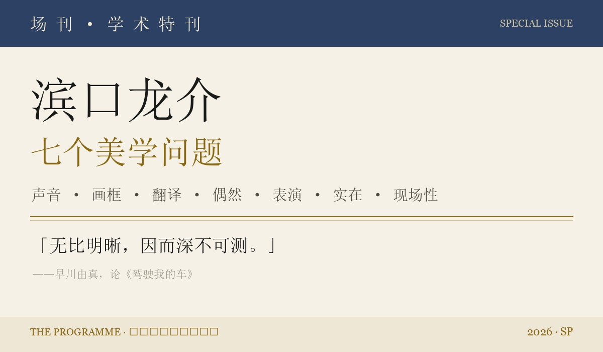

《场刊》第四期处理了《突如其来》这部影片；这册特刊处理的是另一个对象——滨口龙介的电影在电影本体层面提出了什么问题。本册与第四期《突如其来》互补：那一期是单片场刊，这一册是创作整体与谱系。选材只收学术与深度批评文本（导演本人的电影分析文章、《电影手册》《视与听》《电影季刊》线索、日本独立批评志与学术著述），明确排除行业媒体与日常杂志文章。
本刊的组织方式与一般导演专号相反：以「问题」而非「作品」分章。七个问题——语言的否定性、可见与不可见、翻译、偶然与时间、表演、影像与实在、现场性——各自悬挂在滨口二十年的作品序列上，而非按片名排列。每个问题先给出编辑部的论题综述，再附全文译丛——七篇学术与批评文本的完整译文与完整原文并列排印（编辑部试译，直译为主）；引文全部可溯源，无法取得全文的文献均如实标注。它为连续的、长时间的深度阅读而设计——对「滨口为什么重要」的机制而非轶事感兴趣的读者，是它唯一的预期读者。
一点诚实声明：滨口研究在学界尚在起步期，本刊是「初探的汇编」而非定论；七篇译文的措辞以直译为先，引用请核原文。最锋利的反对意见（第六章大寺眞輔对巴赞问题的重提）被完整呈现而非回避——一部学术特刊的资格，恰恰取决于它如何处理自己最不能消化的批评。
影像「过度确定」——拍下的东西就在那里，无法否认它在；语言天生含混，说了什么既不能确证也不能当场证伪。批评志『エクリヲ』的谷口惇把滨口自述的「潜在的层次」接进哲学坐标：影像中没有否定，唯有语言能把「没有」「也许」「谎」带入画面——悬念因此从剧情钩子移到「这句话何时露馅」上。声音层面的对应物是滨口的「布列松之耳」与读本排练输出的平板台词（说见第五章全译）。
长达五小时十七分的《欢乐时光》，没有辜负它的片名，恰恰提供了充盈着幸福的时间。观影前的紧张与不安，散场时外界的寒气与体内的热气，从外侧包裹住观影中的兴奋，整个地成为一次难以忘怀的体验。然而，把这部作品的魅力语言化、与看过或没看过的他人分享，却出乎意料地困难——明明它是如此出色。把仿佛风一吹就散的微明印象勉强变成语言，算不算职业病呢。总之，不把这份困难轻易套进某个解读的格子、而是在格子前停下脚步——这一点，导演本人似乎是允许的。在《欢乐时光》公映之际出版的著作《在摄影机前表演》的开头附近，滨口龙介这样写道：
「《欢乐时光》最大的魅力，是作为表演者的她们的存在本身。这一点，大概能拯救实际创作者谈论某部电影的方法时的愚蠢。作为永不穷尽的谜，她们就在电影的中心。」
此处被称为「她们」的，滨口自己注明，不只是四位主演——明里、樱子、芙美、纯（此处仅记角色名）——而是这部电影出演者的全部。故事主要由这四人与其身边人物交织而成，是一幅群像。考虑到《欢乐时光》几乎全部由无表演经验者出演，滨口这句读来几乎会被轻轻放过的话，便远远超出了客套，骤然有了重量：在所谓「作家主义」以降的批评地平上，始终与作品之名同列甚至以更大分量被谈论的「导演」，不去从高处控制演员的表演，而是对她们的魅力与谜发自内心地感到惊讶——在我看来实在痛快。
但与此同时，这里可以读出一种背反的事态：关于制作过程等等，开陈得越多，作品的谜反而越深。滨口自己的这个告白，在某 种意义上，从一开始就背叛了这本书的内容——书正是他诚恳回应洛迦诺电影节之后大量提问与疑问的成果。何况在所引的文字里，魅力与谜，不正是借「她们」为媒质、几乎被等号连结在了同一位置吗？那么——明知「讲述之愚蠢」，他为什么还要写、要说、还要被说呢？我想这样问。一旦为求诚实而一度打破沉默，此后便只能由滔滔不绝统治四周——这一点，难道不正是滨口自己作品中的人物最清楚的吗……？让我引他自己的话：
「也许单纯是因为喜欢词语。那可能是因为，我想逆着影像那过度的确定性。我喜欢词语的含混。词语不像映在画面上的影像那样硬——一个人说了什么，其实没有办法确证真假。而且，如果是谎话，就会产生『它何时会暴露』的悬念。即使无意说谎，言语与行动也常常矛盾。有一种感觉：言语在『此刻映入眼帘的画面』上，一层一层地生成潜在的层次。我觉得，做这样的电影，我自己也能做到——这就是出发点。」（《电影在哪里：独立电影的新浪潮》。强调为原文所有）
读这段话，我想起在某处听过的一句话：「影像之中没有否定。」粗略地说：现实世界，以及将它表象出来的绘画与影像，是自身充足之物；把否定性带入其中的，是语言、也只能是语言。也就是「苹果不在」中的那个「不在」如何得以表现的问题。滨口所说的「潜在的层次」，在我看来正是这个否定性。而且我从中还读出了一层野心：把在「只处理被摄物的表层優位型批评」里总被置于劣位的「感情」，重新拉回焦点——而且不是泛泛的感情描写，而是刻画兼具足以抓住观众的厚度（或许也可称为「摇晃」）的人物。这样的人物刻画法，让人想起滨口在大学毕业论文中选择为主题、并公开承认其影响的约翰·卡萨维茨。下面引的是电影导演盐田明彦谈卡萨维茨的一段话。卡萨维茨的方法与滨口的方法当然不可能完全重合，但在我听来，这段话与《欢乐时光》的魅力在某处交换着遥远的回声：
「不是靠剧作制造悬念，而是靠场面持续过程中的临场感——登场人物的下一瞬情感与行动会走向哪里，完全无法预知——靠这种提心吊胆来产生悬念。用这样的方式做电影是可能的：这是非常革新的、惊人的发现。」（《电影术》）
话说回来，一言以蔽之：从未谋面的他人一味展开的对话，为什么能如此抓住我们的兴趣？在咖啡店竖起耳朵听邻座情侣争吵，与花三千日元看这部电影之间，有着极其理所当然、却又几乎可以说毫无例外的区别。可是，那真的、难道不是完全相同的东西吗？看完《欢乐时光》之后，把寒气、热气与种种一切整个裹在一起的那个东西，决不允许分析与解说；但如果说有一件事是确定的，那就是——周围行人的样子，稍稍变得不同了。（谷口惇）
5時間17分の長さを誇る『ハッピーアワー』は、そのタイトルを裏切ることなく、まさしく幸福にみなぎった時間を提供してくれた。鑑賞前の緊張と不安から、劇場を出た時の外気の寒さや体内の熱気までが、鑑賞中の興奮を外側から包み込んで、まるごとひとつの忘れがたい体験となっている。しかしこの作品の魅力を言語化し、作品を既に観た、あるいはまだ観ていない他人と共有することは、思いのほか困難だった。これだけ素晴らしかったのに、である。風が吹けば消えてしまいそうな仄かな印象を何とか言葉にしたいと乞い願うのは、職業病だろうか。ともあれ、その困難さを安易な解読格子にあてはめてしまうことなく、その手前で立ち止まることを、監督自身は肯定してくれているようだ。『ハッピーアワー』公開に合わせて発売された著書『カメラの前で演じること』の冒頭付近で、濱口竜介はこう述べている。
『ハッピーアワー』の最大の魅力は、演者である彼女たちの存在そのものだ。そのことは、実作者がある映画の方法を語るということの愚を救ってくれるだろう。決して尽きせぬ謎として、映画の中心に彼女たちがある。
ここで「彼女たち」と呼ばれているのは、映画の主役であるあかり、桜子、芙美、純（役名のみ記す）の4人だけでなく、この映画に出演しているすべての人のことである、と濱口は断っている。物語は主にこの四人と、家族などその身近にいる人物たちによって織り成される、群像劇だ。『ハッピーアワー』が、そのほとんどが演技経験を持たない演者によって作られた映画であることを鑑みるならば、何気なく読み飛ばすこともできなくもない濱口のこの言葉は、単なる世辞を大きく超え出して、がぜん重みを帯びてくる。いわゆる「作家主義」以降の批評の地平において、常に作品の名前と同列かそれ以上の重みで語られてきた監督が、俳優の演技を高みからコントロールするのではなく、その魅力と謎に心から驚いているのだ。私には実に痛快におもわれた。しかしそれと同時に、ここにはある背反した事態が読み取れる。すなわち、映画の製作過程などについて開陳すればするほど、かえって作品の謎がより深まってしまう、という。濱口自身によるこの告白は、ロカルノ映画祭以降多く寄せられた質問や疑問に対し、監督自身が誠実に答えようとしたその成果である本書の内容を、ある意味ではハナから裏切ってしまう宣言でもあるのだ。そもそも引用した文章において、魅力と謎は「彼女たち」を媒介にほぼ等号で結ばれうる位置にあるではないか。ではいったい、「語るということの愚」を知りながら、彼はなぜ書き、語り、語らせるのだろうか？ と問いたい。誠実たらんとし、沈黙をひとたび破ってしまえば、あとは止め処ない饒舌があたりを支配せざるをえないことは、何よりも濱口の作中人物自身がよく知っていることではなかったか……？ 彼自身の言葉を引用してみよう。
単純に言葉が好きなのかもしれない。それは、ぼくが映像というものの過剰なまでの確かさに逆らいたいからかもしれません。言葉というもののあやふやさが好きなんです。言葉は、映像として映っているものほどハードではないというか、何を言ったからってそれは本当かどうか確認する術はないですよね。そして、嘘だったら「それがいつバレるのか」っていうサスペンスが生まれる。嘘をつく気がなくても、言葉と行動が矛盾することもよくある。言葉によって「今、眼に見えている画面」に潜在的なレイヤーが出来ていく感覚があって、そういう映画を作ることなら自分でもできそうな気がした、というのが出発点だと思います。（『映画はどこにある インディペンデント映画の新しい波』より。強調原文）
この発言を読んで私は、「イメージには否定がない」という、どこかで聞いた言葉を思い出した。乱暴に言えば、現実世界やそれを表象した絵画や映像などは、それ自身として充足したものであり、そこに否定性を持ち込むものは言語である／でしかない、ということだ。つまり、「リンゴがない」という時の「なさ」をいかに表現しうるか、という問題である。濱口の言う「潜在的なレイヤー」とは、この否定性のことのように思われる。そしてここには、映っているものをのみ扱う表層優位型の批評においては劣位に置かれてしまいがちな「感情」に再びフォーカスを当てることへの野心までが含意されていると私には読めた。それも、通り一遍の感情の描き方ではなく。観客の心を捕らえるに足るだけの厚み（揺れと言ってもよいかもしれない）を兼ね備えた人物を描くのだ。こうした人物の描き方は、濱口が大学の卒業論文の題材とし、影響を公のものとしているジョン・カサヴェテスを想起させる。次に引用するのは、映画監督の塩田明彦がカサヴェテスについて述べた発言だ。もちろんカサヴェテスの方法と濱口の方法が完全に重なるなどということはありえないが、私にはこの言葉が、『ハッピーアワー』の魅力とどこかで遠いこだまを交わしているようにおもわれた。
作劇によるサスペンスではなくて、シーンが持続していくなかでの臨場感というか、登場人物たちの感情や行動が一瞬後にはどこへ向かっていくかわからないっていう、そういうハラハラドキドキによってサスペンスを生み出していく。そんなふうに映画を作ることが可能なんだということは、これはやっぱりものすごく革新的な、驚くべき発見だったわけです。（『映画術』より）
それにしても、言ってしまえば会ったこともない他人たちがひたすら繰り広げる会話が、なぜこれほどまでに私たちの興味をひくのだろうか。喫茶店に入って隣のカップルの口論に耳をそばだてるのと、3000いくらのお金を払いこの映画を観ることの間には、極めて当たり前であるが、まったくといっていいほどの違いがある。だが、それはほんとうは、まったく同じものなのではないだろうか？ 『ハッピーアワー』を観た後の寒さや熱気やあれこれをまるごとひっくるめたそれは、決して分析や解説を許すものではなかったが、ひとつ確かなことがあるとすれば、周りを歩く人々の見え方が少しだけ変わったということだ。（谷口惇）
当调度把一切拍得清清楚楚，「他者的不可测」还剩什么位置？早川由真的答案：神秘不被制造，而是明晰的剩余物——高槻在画外做尽一切、败露总在事后，但那「不是谜，只是看不见而已」。与之互为表里的是滨口对画框的洁癖（「画面的贫困」，见第五章全译）与《突如其来》1.5:1 的画幅选择（单源：导演音声向导对谈，官方未公布）。
不是表演的「真话」——那逼真的脸、嗓音与身姿，如何才能通过表演被召唤到画面上来？这个困难的问题，被认为贯穿滨口龙介的全部作品；在根据村上春树短篇集《没有女人的男人们》中数篇改编的新作《驾驶我的车》（2021）里，它似乎正从一个与以往略有不同的角度被追问。鉴于《偶然与想象》（2021）要到今年十二月才在日本公映，这里暂不细究这条线索的变迁，只想贴着作品弄清：是什么让人不觉得一百七十九分钟长、始终被吸引。因为这部作品描绘的，是面对他者的深不可测时、忍不住「演点什么」的某种软弱。
是他者的深不可测吸引着观众吗？或许也可以这样理解。但在这部作品里，重要的是：他者的深不可测，终究是由周到设计出的「明晰」导出的。所谓明晰，究竟指什么？首先，他者与表演这一主题，被以再明晰不过的轮廓描绘出来。从主人公家福悠介（西岛秀俊）的设定——他执导各国演员各说母语的多语剧场，自己也登台——起，「他者与表演」的主题便被极其明确地打出。登场人物的塑造也一样：「这个人就是这样的人」——被赋予了明晰的轮廓。正如影片以逆光中坐起身体的女性剪影开场，前演员、如今身为编剧的妻子·音（雾岛丽香）的深不可测——她有一个奇异的习性：借性行为无意识地生成故事，翌日忘得一干二净，还要向对方询问内容、据此写剧本——其引入方式本身也是极为明晰的。
进而，这些表演与他者的主题，如片名所示，与汽车的行驶相嬉戏、为画面上色——这一展开也被无限明晰地导出。开场，家福与音乘着心爱的红色瑞典车萨博前往工作地。以斜前方移动镜头捕捉行驶车身开始，接一个把摄影机置于后座、从斜后方收进两人的切返，两人谈起妻子生成的故事——那个潜入心上人家中行窃、留下卫生棉条的少女的故事。随后，一辆车从画面右后方驶来、沿 U 形弯道来到右前景；这场运动，被架在疑似大厦屋顶高处的摄影机以斜俯瞰长镜收下；车身隐入大厦阴影后，镜头仍缓缓摇追，待它再度出现便准确收入画框，最后任其从右侧出画。这个长镜头，为后文将谈到的「可见与不可见的嬉戏」这一重要要素，向作品做了舒缓的导入。
正如开场移动戏所显示的，这部电影仔细地拍出汽车行驶带来的移动。不过，所谓行驶，既不追求约瑟夫·H·刘易斯《枪疯》（1950）或维姆·文德斯《美国朋友》（1977）那种以汽车的意外运动点亮画面的活剧瞬间，也不追求约翰·卡彭特《克丽丝汀魅力》（1983）与科波拉《塔克：其人其梦》（1987）以各自方式呈现的汽车的凶暴官能性。它关心的，始终是日常移动与作品主题的关联的提示。除开驶向广岛与北海道的长距离移动，移动戏大体以一个「就是它了」的长镜为中心构成。例如，为赴海参崴戏剧节本应乘坐的航班因天气停飞、无奈返回都内自宅的往返移动：去程，高处俯拍红色车身在高速路上爽快行驶的长镜；抵机场停车场同时接到停飞通知、随即折返的斜俯瞰镜头；归程，高处俯拍车身驶回高速的长镜；最后驶入自宅立体停车楼的镜头——如此构成。与这副巧妙回避了对阿巴斯·基亚罗斯塔米之距离测算的简洁相伴，「把汽车行驶编入表演与他者主题」的周密设计也浮现出来：边驾驶、边跟读妻子录制的《万尼亚舅舅》台词磁带来背词——这一作业成了这位导演兼演员之生的必需。这个事实，稍后也将由车轮与卡带的意象相互叠印的瞬间象征性地示出。然而，往返移动结束后从机场回到家里的家福，隔着客厅的大镜子，目击了妻子与年轻男子裸身相拥的脸，于是不动声色地从玄关离去。
开场段落里尤其出色的，是暗示两人之间有一位亡女的法事之后，两人在沙发上相互索求身体的场面。一度结束后静静躺着的妻子，开始讲述行窃少女的前世是七鳃鳗，随后像被什么附体般再度索求丈夫的身体。一边描绘少女在心上人的床上打破自我禁令自慰的姿态，一边骑乘位激烈摆腰的雾岛丽香的气魄首先摄人；此外，对那段情事佯作无知、边贪婪摆腰边编织故事的妻子委身其中、不知望向何处地仰视半空的西岛秀俊那决绝的脸，被斜上方的俯瞰镜头收下——这个镜头同样难以忘怀。像是要遮住什么似的，家福突然用左臂覆住眼睛，片刻后又凝视虚空，把身体交给到达顶点的妻子。如这场面弥漫的异样气息所暗示，翌日猝然倒下的妻子，就此再未醒来。于是，对亡妻佯作无知、失去了她的家福所面对的，便是「如何了结妻子的深不可测与自身感情」这个问题。实际上，尽管开场所经过的时间已相当长，演员与工作人员的职员表却在此刻才浮现画面——仿佛电影现在才随着这个问题开始。
家福面对这个问题的过程，与他者、表演的主题交错的进程，同样以明晰的轮廓被追索。妻子死后两年，受邀广岛戏剧节、主持多语版《万尼亚舅舅》工作坊的家福，接受了戏剧节雇用的寡言司机渡利美咲（三浦透子）。面对这个穿着皱衬衫戴帽子、来路不明的年轻女性、几乎要拒绝让她开车的家福，美咲说「有任何不满意的地方我随时替开」——她的嗓音在平静里带着不容分说的轴心。不过，她卓越的驾驶技术，除了以妻子做不到的顺畅变道明示之外，并无他处呈现：不用火爆的飞车戏、而在电影上表现「驾驶的高明」，极其困难——彻底把摄影机置于车内、用窗外影像与画外音响把汽车运动拍出生猛感的基亚罗斯塔米《十段生命的律动》（2002），或许是罕见的成功例。总之，沿濑户内海的道路悠然前行的车身那抹红，被开放的长镜收下，明晰地宣告新局面的到来。
在汇集台湾、韩国、东南亚各地参与者的工作坊里，特征性的一幕是：滨口自《欢乐时光》（2015）以来实践的那种、取让·雷诺阿与罗贝尔·布列松的提示 的独特「读本」——极简地说，就是不带感情地反复朗读剧本、让演者把文本身体化——作为家福的导演方法在作品内登场。又因为高槻（冈田将生）意外参加了这个工作坊，家福被迫继续对妻子与这位年轻演员的暧昧关系佯作无知；表演与他者的主题在工作坊内外交错的样子，也被设计得极其周密。
表演与他者主题的明晰，因用手语表演、无法出声的李允儿（朴珪瑛）在工作坊登场而抵达顶点；但我更想重视的，是她周身散发的谦逊魅力。被邀到家中共进晚餐的家福与美咲，在一条棕色大狗绕着餐桌打转的旁边，经戏剧节戏剧构作孔允秀（陈大英）的翻译与她交谈。两人其实是夫妻，历尽挫折后来到广岛的经过也被讲述；但更让人措手不及的，是此前在工作坊几乎只见严峻表情的李允儿微笑的样子——竟如此自然、如此迷人。而那双修长手指的双手柔韧翻飞、击掌出声般迅疾的动作、把手掌举到唇边的姿势、时不时唇间发出「啪」的破裂音同时把手短促前伸的身姿——由手语生出的独特节奏，无可名状地出色。以被这副身姿吸引的美咲的视点镜头为开端，第三者——这位司机的微小变化也被导出；在这个场面里，从稍高的位置收下餐桌全体的构图中，家福问「没有什么难处吗」，李允儿一边微笑一边面向画面前方用手语回答「为什么单单问我这个」——这个镜头给观众奇妙的感动。只余微弱环境音与手语击打声静静回响的音响设计也出色。没有给这个场面配乐的导演的选择、以及允许这一选择的制作环境，我愿由衷祝福。明明是被「表演与他者」主题的周密设计导入的要素，朴珪瑛的手语在这个不经意的场面里，却魅力到能让人一时忘记那份周密。
顺带说，把「可见与不可见的嬉戏」推到前景的，是高槻。正如隔着镜子目击妻子情事的镜头里映进的只是背影而非脸，高槻常常展示后背。告知饰演叶莲娜的珍妮丝（袁子芸）前来私谈之后，离去时的背影被映出；最终被捕、离开舞台时，共演者们也只能默默注视那个背影。这些背影强调着：高槻是拥有不可见部分的存在。实际上，他在画外干尽各种事，败露总在事后：不知不觉与珍妮丝好上、同乘一车；从酒吧归途，对用手机偷拍自己的年轻男子施以画外暴力。那么，他是充满谜的存在吗？又未必。与家福初次对饮的那晚，虽未触及情事本身，高槻并不掩饰对音的好意。也就是说，他不是从隐蔽中取乐，而是忠于自身欲望与好奇心的存在。在看不见的地方做着什么——那不是谜，只是看不见而已。或者说，他坦率地行使着「不被看见的自由」。正因如此，面对想偷拍自己的人，他才两次施暴：对「被摄影机这一装置收进画框」的原理性暴力，他抵抗着。
高槻登场的段落里最重要的，是他在车中与家福对峙、终于踏进要害的核心场面。在那里，高槻亮出自己听过音编织的故事「比家福所知更后来的展开」。这里不去细想这一事实对家福的冲击；所讲故事的内容本身也有兴味——少女用笔刺瞎另一个窃贼的「左眼」一句，令人联想家福为「左眼」点眼药的瞬间；少女盯着监控摄像头喊「是我杀的」一句，又与忌讳镜头的高槻最终因杀人嫌疑被带走时的表情、以及后文家福与美咲互认加害者性的身影重叠——那些为唤起联想而周密设计的细节，也不再深入。这里想指出的只有一件事：近乎正面捕捉并坐的冈田将生表情的特写，映出了只能称之为逼真的、决绝的脸与嗓音。观众只能屏息、被压倒地侧耳倾听高槻的话语。可以说，高槻是在可见与不可见的边界上「平板地」来往的存在：他备着一种单纯可见／不可见的轻薄。正因为这份轻薄被周密设计，冈田此处逼真的表演才愈发有迫力。由周密设计出的轻薄之明晰轮廓，「真话」的脸与嗓音被召唤而来。也就是说，在这里，他者的深不可测，恰恰是透过明晰的轮廓，在镜头上依稀可见。
经由与高槻的对峙，家福的问题归结到可见与不可见的关系。为斟酌是否代替被捕的高槻出演万尼亚，家福从广岛出发，由美咲驾驶前往她的故乡北海道。在这段受两天时限约束的长途行驶中，「公路片」这一类型的距离测算几乎没有被瞄准：一个总体暖昧、难以定型的「类型外的类型」，或许本就不适合周密设计。实际上，还有哪部作品的道中如此地与徒劳、迂回、彷徨无缘、一路直奔目的地吗？科波拉《雨中的人们》（1969）道中那种市内游行般与目的无关的多余介入，家福们是无缘的。确实，映出车前方道路的几个镜头缓缓令人想起文德斯；从车后方架机、拍下穿过隧道瞬间的夜的暗——那里还落着雨——的镜头，微微令人（就「朝向后方的视点」而言）想起伊斯特伍德；黑暗中乡村道路上缓缓画着 U 形弯的车身长镜的曲线性，多少缓和了行程的直线感，也未可知。但在这段道中，对家福重要的，是坐在副驾上微眠、把身体交给车身、以此让思考回环——《亲密》的濑户夏实也在副驾上打盹，《夜以继日》的唐田英里佳在副驾上醒来、由此悟出自己应走的方向。
微眠的尽头，家福终于与自己的问题正面相向。在被雪掩埋的旧居前，美咲说：音深爱着家福，也同样需要别的男人；不过就是这样的事，不过就是这样的人——那里没有谜。家福悲叹自己从未正面面对过音。也就是说，妻子的深不可测，是他自己擅自造出来的。不是别的——只是有可见的东西，与不可见的东西。于是走到这里，「明晰」指的就是这个呆事实本身：单纯可见的东西，与单纯不可见的东西。坦率接受这个呆事实的明晰，对家福而言应成为救赎；与他者深不可测的对峙，反倒要从那个地点才成为可能。
家福决意出演万尼亚，在公演舞台上与饰演索尼娅的李允儿对话。临近终幕，忒列金弹起的吉他微微回响，索尼娅从万尼亚背后抱住他，在他脸前展示手语。正面收下这副姿势的构图中，李允儿修长的手指四处翻飞，「啪」的破裂音与身姿刻下独特节奏，无心地用眼睛追随这一切的家福的种种表情，同时映出。字幕所示的索尼娅台词的内容固然密切相关，但超出其语义之上——诉说它的手之美丽身姿「单纯地可见」，以及看着它的那个人的表情也同时可见——这一事实，只是只是地感人。两人的表演当然也无懈可击。而后，夹入观众席上美咲的半身镜，又插入一个从舞台深处朝向观众席的视点——从李允儿与家福的背影那边收下观众席的镜头。这里，约翰·卡萨维茨《首演之夜》（1977）中那些从舞台朝向观众席的镜头——乃至卡萨维茨本就是常拍背影的作者、而滨口自己在那篇作为毕业论文写下的出色卡萨维茨论里就指出过这一事实——并非不能缓缓想起；但重要的，我想仍是那个呆事实：背影单纯地可见。背后不是看不见的，背后单纯地可见，那里没有谜。无比明晰，因而深不可测。
行至此地，作品由取景韩国的尾声收束。与李允儿们饲养的棕色狗一道、驾驶家福萨博的美咲的身影所告知的是：这部作品最终并不拒绝「想象不可见之物」的自由。把那样的余地也周密地编入其中，这部作品透过单纯可见之事、或单纯不可见之事的明晰，让我们依稀看见他者的深不可测。
（注 1）关于让·雷诺阿的「意大利式读本」，参见：滨口龙介、野原位、高桥和由《在摄影机前表演》（左右社，2015）；角井诚〈文本·情动·动物性——让·雷诺阿与路易·茹维的表演论〉（《表象》第 7 号，2013 年，191–206 页）。
（注 2）不过，正因高槻的特写是如此出色的镜头，台词最后的重要段落——「说到底我们必须做的，是与自己的内心老实地、聪明地折衷相处吧。如果真想看到他人，就只能深深地、笔直地注视自己。我是这么想的」——这附近，是否有必要在中途切回家福的反应镜头，我是存疑的。也许有剪辑上的缘故，但如果可以，我想看着高槻把台词说完，不切镜头。
（注 3）滨口龙介〈约翰·卡萨维茨的时间与空间〉，《美学芸術学研究》第 22 号，2003 年，303–340 页。
演技ではない「本当のこと」を語る真に迫った顔や声、そして身振りは、いかにして演技を通じて画面に呼び込むことができるのか。濱口竜介のフィルモグラフィに一貫して流れていると思われるこの困難な問いは、村上春樹の短編集『女のいない男たち』に収められた数篇の小説に基づく新作『ドライブ・マイ・カー』(2021)において、これまでとはやや異なる角度から追究されているように見える。というのも、この作品では他者の底知れなさを前にして何かを演じてしまう、ある種の弱さが描かれているからだ。だが、『偶然と想像』(2021)が今年の12月まで日本で公開されないという現況にあって、その追究の変遷を詳細にたどることは差し控えておく。むしろここでは、179分もの上映時間を長いと感じさせずに観る者を惹きつけるのは何なのか、作品に寄り添いながら浮かびあがらせてみたい。
他者の底知れなさこそが観る者を惹きつけるのだろうか。そのように捉えることもできるかもしれない。だが、この作品において重要なのは、他者の底知れなさが、あくまで周到に設計された明瞭さによって導き出されることであるように思われる。その明瞭さとは、いったい何のことなのか。まず、他者や演技というテーマが、このうえなく明瞭な輪郭をもって描き出されることが挙げられる。国籍や民族の異なる俳優たちがそれぞれの母国語を話す多言語劇を演出し、自らも舞台に立つという主人公・家福悠介（西島秀俊）の設定からして、他者と演技というテーマは非常に明確に打ち出されている。また、登場人物の在りようも、「この人はこういう人なのだ」と思わせる明瞭な輪郭が設計されている。部屋に差し込む逆光のなか身体を起こす女性のシルエットからこの作品が開始されているように、元俳優でいまは脚本家として活躍しているという妻・音（霧島れいか）の底知れなさ──彼女は、性行為を通じて無意識のうちに物語を生み出し、翌朝にはすっかり忘れてしまったその内容を相手に尋ね、それをもとに脚本を執筆するという奇妙な習性をもつ──も、導入の仕方自体はきわめて明瞭だといえよう。 さらに、そうした演技や他者のテーマが、題名の通り自動車の走行と戯れながら画面を彩っていく展開も、限りなく明瞭に導き出されていると言えるだろう。冒頭、愛用するサーブという赤いスウェーデン車で、家福と音は仕事場へと向かう。走行する車体を斜め前方から移動で捉えたショットに始まり、後部座席にカメラを据えてふたりの姿を斜め後ろから収めた切り返しへと続き、妻が生み出した物語──意中の相手の自宅に空き巣として侵入し、タンポンを放置する少女の話──についての会話が交わされる。その後、画面右奥から走ってきた車体がU字カーブに沿って画面右手前までやってくる運動を、ビルの屋上と思われる高所に据えられたカメラが斜め俯瞰のロングショットで捉えるのだが、カメラは車体がビルの陰に隠れて見えなくなっても追い続けて緩やかにパンをしていき、ビルの陰から再び現れた車体を的確にフレームに収めると、最後は車体を画面右へとフレームアウトするに任せる。このロングショットは、のちに触れることになる、見えるものと見えないものの戯れという重要な要素を、作品に緩やかに導入しているように思われる。
冒頭の移動シーンから明らかなように、この映画は自動車の走行による移動を丁寧に描いてみせる。ただし、走行といっても、たとえばジョゼフ・H・ルイス『拳銃魔』（1950）やヴィム・ヴェンダース『アメリカの友人』（1977）のように、自動車の意表を突く運動が画面を輝かせる活劇的な瞬間が目指されているわけでもなければ、ジョン・カーペンター『クリスティーン』（1983）やフランシス・フォード・コッポラ『タッカー』（1987）がそれぞれ別の仕方で示しえた自動車の凶暴な官能性が追求されているわけでもない。あくまで、日常的な移動と作品のテーマとの連関を提示することに関心が向けられているように見える。広島や北海道へと向かう長距離の移動を除いて、移動シーンはひとつの「これだ」というロングショットを中心に構成されていたように思われる。たとえば、ウラジオストクで開催される演劇祭に参加するため乗るはずだったフライトが悪天候のため欠航となり、仕方なく都内の自宅へと戻ってゆく行き帰りの移動は、高速道路を颯爽と走行する真っ赤な車体を高所から捉えた行きのロングショット、空港の駐車場に到着すると同時に欠航の連絡を受けて引き返すまでの運動を捉えた斜め俯瞰のショット、そして高速道路を戻っていく車体を高所から捉えた帰りのロングショット、最後に自宅の立体駐車場に入庫するショット、というふうに構成される。アッバス・キアロスタミとの距離を計測することを巧妙に回避しているかのようなこの簡潔さとともに、演技と他者というテーマに自動車の走行を組み込む周到な設計も浮かびあがってくる。すなわち、運転中にアントン・チェーホフ『ワーニャ伯父さん』を朗読する妻の声が録音されたカセットテープを流しながら台詞を暗唱するという作業が、この演出家兼俳優の生にとって欠かせないものとなっているのだ。この事実は、しばらくのちに現れる自動車の車輪とカセットテープのイメージがオーバーラップする瞬間によっても象徴的に示されることになるだろう。だが、そうした往復移動の末に空港から自宅に戻った家福は、若い男と裸で抱き合っている妻の顔を居間に置かれた大きな鏡越しに目撃してしまい、気付かれぬよう玄関から出て行くことになる。
序盤で特に素晴らしいのは、夫婦の間に亡くなった娘があることが示唆される法事を経て、ふたりがソファのうえでお互いの身体を求め合う場面である。一度行為を終えて静かに横たわっていた妻は、空き巣をはたらく少女の前世がヤツメウナギだったことを語り始め、何かに取り憑かれたように再び夫の身体を求める。意中の相手のベッドのうえで、みずからに禁じていたはずの自慰をおこなう少女の姿を描写しながら、騎乗位で激しく腰を動かす霧島れいかの気迫にまず引き込まれる。さらに、例の情事について無知を装ったまま、貪るように腰を動かしながら物語を紡ぎ出す妻に身をまかせ、どこを見つめるともなく宙空を見上げている西島秀俊の壮絶な顔を、斜め上からの俯瞰でとらえたショットも忘れがたい。何かを見まいとしているのだろうか、家福は不意に左腕で自分の目元を覆うが、しばらくするとまた虚空を見つめ、絶頂を迎える妻に身を委ねるのだった。この場面に漂うただならぬ気配が示唆していたように、翌日とつぜんの病に倒れた妻は、そのまま帰らぬ人となってしまう。したがって、無知を演じたまま妻を失った家福が向き合うことになるのは、妻の底知れなさや自身の感情とどのように決着をつけるのかという問いである。実際、冒頭からかなりの時間が経過していながら、あたかもいま映画がこの問いとともに始まったかのように、俳優やスタッフたちのクレジットが画面に現れることになるだろう。
この問いに家福が向き合うプロセスは、他者や演技というテーマと交錯しつつ、やはり明瞭な輪郭をもってたどられていく。妻の死から二年後、広島の演劇祭に招聘され、複数の言語が交錯する『ワーニャ伯父さん』の上演を目的としたワークショップを任された家福は、演劇祭が雇った寡黙な運転手・渡利みさき（三浦透子）を受け入れることになる。くたびれたシャツと帽子を身につけた得体の知れない若い女性に運転を任せることを拒絶しかけた家福に対して、少しでも気に入らないところがあれば運転を代わりますと告げるみさきの声には、平静さのなかにも有無を言わさぬ芯の通った響きがある。ただし、彼女の卓越した運転技術は、妻にはできなかった円滑な車線変更によって明示されるほかはなく、運転の巧みさを派手なカーアクションを用いずに映画的に表現することはきわめて難しい──徹底して車内にカメラを据え、窓外の映像と画面外の音響を用いて自動車の運動を生々しく捉えたキアロスタミの『10話』（2002）が貴重な成功例だろうか──と感じさせられた。ともあれ、瀬戸内海に沿った通りを悠々と進んでいく車体の赤さをとらえた開放的なロングショットは、新たな局面の到来を明瞭に告げることになるだろう。
台湾・韓国・東南アジアなど様々な地域からの参加者が集うワークショップにおいて特徴的なのは、濱口が『ハッピーアワー』（2015）以来実践してきた、ジャン・ルノワールやロベール・ブレッソンの方法にヒントを得た独特の「本読み」作業──ごく簡単にいえば、感情を込めずに何度も脚本を音読していくことで演じ手がテクストを身体化していく方法──が、家福の演出方法として作品内に登場することである （※1）。また、このワークショップに思いがけず高槻（岡田将生）が参加してくるために、この若手俳優と妻との曖昧な関係について家福が無知を装い続けることを強いられ、ワークショップの内外で演技と他者のテーマが交錯してゆくさまも、きわめて周到に設計されているといえよう。
そうした演技と他者というテーマの明瞭さは、声を出せず韓国語の手話で演技をするイ・ユナ（パク・ユリム）がワークショップに登場することで頂点に達するのだが、ここでより重視したいのはむしろ、彼女が漂わせる慎ましい魅力である。自宅での夕食に招かれた家福とみさきは、食卓の傍らを大きな茶色い犬がウロウロするなか、演劇祭のドラマトゥルクを務めるコン・ユンス（ジン・デヨン）の通訳を介して彼女と会話をする。実は彼らは夫婦であり、様々な挫折を経験したのちに広島に住むことになった経緯が語られもするのだが、それ以上に不意を突かれるのは、それまでワークショップではほとんど険しい表情しか見せていなかったイ・ユナの微笑む姿が、実に自然で魅力的であることだ。そして、そのすらりとした長い指をもつ両手をしなやかに操り、音を立てるほどに素早く手を打ちつける動きや、口元に持ってくる仕草、さらに時折「パ」という破裂音を唇で発しながら手を前に短く差し出す身振りによって独特のリズムを生み出す手話が、なんともいえず素晴らしい。そうしたイ・ユナの在りように惹かれたみさきの視点ショットを皮切りに、第三者であるこの運転手の微かな変化が導かれたりもするこのシーンにおいて、やや高めの位置から食卓の全体を捉えた構図で、何か大変なことはないかと問う家福に対し、どうして私にだけそんなことを聞くんですかと微笑みながらイ・ユナが画面手前に向かって手話で返答する光景を映したショットは、不思議な感動を観る者に与える。微かな環境音と手話の奏でる物音が静かに鳴り響くだけの音響設計も素晴らしい。このシーンに音楽をつけなかった監督の選択、そしてそれを許した制作環境を心から祝福したい。演技と他者というテーマを構成する周到な設計によって導入された要素であるにもかかわらず、この何気ないシーンにおけるパク・ユリムの手話は、そうした設計の周到さを束の間忘れさせてくれるほどに魅力的である。
ところで、見えるものと見えないものの戯れという要素を前景化させるのが、高槻という存在である。妻との情事を鏡越しに目撃するショットで、顔ではなくその背中だけが映り込んでいたように、高槻は背中をよく見せる。エレーナを演じるジャニス・チャン（ソニア・ユアン）から私的な相談を受けたことを家福に告げたあとには去っていく背中が映し出されるし、最終的に逮捕されて舞台を去っていくときも、共演者たちは黙ってその背中を見つめることしかできない。これらの背中は、高槻が見えない部分を持った存在であることを強調している。実際、彼は画面外で色々なことをやっているが、それが露見するのはいつも後になってからである。たとえば、いつのまにかジャニス・チャンと仲良くなっていて一緒に車に乗っているし、バーからの帰りには、自分をスマホで盗撮した若い男性に対して画面外で暴力を振るっている。では、彼は謎に満ちた存在なのかというと、必ずしもそうではない。家福と最初に酒を交わした夜も、情事があったことにまでは踏み込まないが、高槻は音に対して好意を抱いていたことを隠さない。つまり、隠蔽することに快楽を見出すのではなく、むしろ自らの欲望と好奇心に忠実であろうとする存在である。見えないところで何かをやっているが、それは謎ではなく、単に見えないだけなのである。あるいは、彼は見えないでいることの自由を素直に行使していると言ってもいい。だからこそ、彼は自分を盗撮しようとする人間に対して、二度も暴力的な対応をするのだろう。つまり、カメラという装置によって画面内に収められることの原理的な暴力に対して彼は抵抗しているのではないだろうか。
高槻が登場する箇所でもっとも重要なのは、自動車のなかで家福と対峙し、ついに肝心な事柄に踏み込んでゆく核心的なシーンである。そこで高槻は、性行為のあとに音が紡ぎだす物語について、家福が知っているよりも先の展開を聞いていたことを明かす。ここでは、その事実が家福にとっていかに衝撃的であったかについて思いを巡らすことはしない。また、語られる物語の内容もそれ自体として興味深いが──たとえば、少女がもう一人の空き巣の「左目」をペンで刺したというくだりは、家福が「左目」に目薬を差した瞬間を連想させるし、少女が監視カメラを見据えて「私が殺したんだ」と叫ぶというくだりは、カメラを忌避していた高槻が最終的に殺人容疑で連行されていく際に見せる表情や、のちに自らの加害者性を表明し合う家福とみさきの姿にも重なってくる──、連想を呼び込むべく周到に設計された様々な細部についても、これ以上踏み込むことはしない。ここで指摘したいのは、並んで座る相手に向かって語る岡田将生の表情をほぼ正面からとらえたクロースアップが、真に迫っているとしかいいようがない、決定的な顔と声を映しだしているという事実に尽きている。観る者はただ息を呑み、圧倒されながら高槻の言葉に耳を澄ませるしかないだろう。いわば高槻は、見えるものと見えないものの境界を、フラットに行き来する存在である。つまり彼は、単に見えたり見えなかったりする軽薄さを備えているといえよう。この軽薄さが周到に設計されているからこそ、ここでの岡田の真に迫った演技は、いっそうの迫力を獲得しているように思われる。周到に設計された軽薄さの明瞭な輪郭によって、「本当のこと」を語る顔と声が呼び込まれる。つまり、ここでは、あくまで明瞭な輪郭を通じて、他者の底知れなさが、ショットのうえに垣間見えているのである （※２）。
高槻との対峙を経て、家福の問いは、見えるものと見えないものの関係に帰着することになるだろう。逮捕された高槻に代わって自らがワーニャを演じるべきかどうかを思案するため、家福は広島からみさきの故郷である北海道まで、彼女の運転で向かうことにする。二日間という制約を受けたこの長距離の走行において、いわゆる「ロード・ムーヴィー」というジャンルとの距離の計測はほとんど目指されていないようだ。はっきりした総体の定まらない、ひどく曖昧なジャンルならざるジャンルの存在は周到な設計には似つかわしくないのかもしれない。実際、これほどまでに無駄や迂回や彷徨とは無縁に、目的地へと一目散に向かってゆく道中があっただろうか。たとえばフランシス・フォード・コッポラ『雨のなかの女』（1969）の道中に現れる街中のパレードのような、目的に関わりのない余計なものに関与している余裕は、家福たちにはないのである。たしかに、車体の前方に見える道路の光景を映したいくつかのショットが緩やかにヴェンダースを想起させたり、車体の後方に向けて据えられたカメラで、トンネルを抜けた瞬間の夜の暗さ──そこには雨も降り注ぐ──を捉えたショットが微かにイーストウッドを──背後に向けられた視点という意味で──思い出させたりすることも、なくはない。また、暗闇のなか田舎道のU字カーブをゆっくりと旋回する自動車の走行をとらえたロングショットの曲線性が、この行程の直線性を幾分か和らげているように見えなくもない。だが、この道中における家福にとって重要なのは、助手席で微睡みつつ車体に身をゆだねることによって思考を巡らせること──『不気味なものの肌に触れる』(2013)の瀬戸夏実も助手席で居眠りしていたし、『寝ても覚めても』(2018)の唐田えりかは助手席で目覚めることで自らの進むべき方向を悟るのだった──であるだろう。
そうした微睡みの果てに、家福はついに自らの問いに正面から向き合うことになる。雪に埋もれたかつての住み家の前で、みさきは次のように語る。音は家福のことを深く愛していたし、他の男のことも同様に必要としていた。単にそういうことだったし、そういう人間だったのではないか。そこに謎はないのだと。家福は、音に正面から向き合ってこなかったことを嘆く。つまり彼は、妻の底知れなさを、自ら勝手に作り上げていた。そうではなく、単に見えるものと、見えないものがあるだけなのである。したがって、ここに至って明瞭さとは、単に見えるものと、単に見えないものがあるという、呆気ない事実そのもののことであるだろう。そうした呆気ない事実の明瞭さを素直に受け止めることが、家福にとって救済となるはずだ。他者の底知れなさとの対峙は、むしろその地点から可能になるのではないだろうか。
家福はワーニャを演じることを決断し、公演のステージ上で、ソーニャを演じるイ・ユナと対話をする。舞台の終幕直前、テレーギンの奏でるギターが微かに響くなか、ソーニャはワーニャの背後から抱きつき、彼の顔の前で手話を披露する。そのような格好のふたりを正面から捉える構図において、イ・ユナのすらりとした指があちこちに素早く動いたり、例の「パ」という破裂音と身振りが独特のリズムを刻んだりしているさまと、それを無心で目で追う家福の様々な表情が同時に映しだされる。字幕で表示されるソーニャの台詞の内容も密接に関わってはいるが、その意味内容以上に、それを告げる手の美しい身振りが単に見えるものであること、そしてそれを見ている者の表情までもが同時に見えるという事実が、ただただ感動的である。無論、ここでのふたりの演技も、文句なしに素晴らしい。そして、客席で観ているみさきのバストショットを挟みつつ、今度は舞台の奥から客席に向けられた視点、すなわちイ・ユナと家福の背中越しに客席を捉えたショットが挿入される。ここでジョン・カサヴェテス『オープニング・ナイト』（1977）で現れる舞台から客席に向けられたいくつかのショット──さらには、カサヴェテスが背中を被写体としてよく撮っていた作家であることや、大学の卒業論文として書かれた優れたカサヴェテス論において濱口自身がその事実を指摘していること（※３） ──が緩やかに想起されないこともないが、重要なのはむしろ、単に背中が見える、という呆気ない事実だと思われる。背後は見えないのではなく、単に見えるのであり、そこに謎はない。どこまでも明瞭で、だからこそ底知れない。
そこまでたどり着いたうえで、この作品は韓国でロケーションされたエピローグによって閉じられる。イ・ユナたちが飼っている茶色い犬とともに、家福のサーブを運転するみさきの姿が告げているのは、最終的にこの作品が、見えないものを想像する自由をも拒もうとはしないということである。そのような余地までをも周到に組み込みながら、この作品は単に見えること、あるいは単に見えないことの明瞭さを通じて、他者の底知れなさを垣間見せてくれる。
ーーーーーーーーーーーーーーーーーーーーーーーーーーーーーーーーーー
註
※1 ジャン・ルノワールの「イタリア式本読み」に関しては、以下を参照。濱口竜介・野原位・高橋和由『カメラの前で演じること』左右社、2015年。角井誠「テクスト、情動、動物性——ジャン・ルノワールとルイ・ジュヴェの演技論をめぐって」『表象』第7号、2013年、191- 206頁。
※２ ただし、高槻のクロースアップが素晴らしいショットであるだけに、台詞の最後の重要なくだり、「結局のところ僕らがやらなくちゃならないのは、自分の心と上手に正直に折り合いをつけていくことじゃないでしょうか。本当に他人を見たいと望むのなら、自分自身を深くまっすぐ見つめるしかないんです。僕はそう思います」のあたりだろうか、その途中で家福のリアクション・ショットと切り返す必要があるのかどうか疑問だった。編集上の都合があるのかもしれないが、高槻が台詞を言い切るまで、可能ならばカットを割らずに見ていたかった。
※３ 濱口竜介「ジョン・カサヴェテスの時間と空間」『美学芸術学研究』第22号、2003年、303-340頁。
早川由真（はやかわ・ゆうま）映画研究者。東京都出身。立教大学大学心理学研究科映像身体学専攻博士課程後期課程修了。博士（映像身体学）。主な論文に「白の存在──リチャード・フライシャー『絞殺魔』におけるカーティス／デサルヴォの身体」『映像学』第99号（2018）、「顔のない殺人者──リチャード・フライシャー『見えない恐怖』における〈盲者の視点ショット〉とキャラクターの生成」『映像学』第102号（2019）など。
映画『ドライブ・マイ・カー』8月20日（金）TOHO シネマズ日比谷ほか全国公開 監督＝濱口竜介 原作＝村上春樹 脚本＝濱口竜介、大江崇允 出演＝西島秀俊、三浦透子、霧島れいか／岡田将生ほか 配給＝ビターズ・エンド
* #早川書房
把 adaptation 追溯到拉丁词源 trānslātiō（搬运），滨口的电影便「全是关于搬运的」：身体、记忆、情感与故事的跨境移动。多语《万尼亚》不是猎奇设定而是翻译本论的电影化；《突如其来》把命题推到字面——让「翻译」成为被表演的内容（村上改编谱系的英语学刊视角另见 Criterion 评注与 《视与听》导演片单）。航班取消邮件印上画面则是画框的慷慨：向外来元素开放。
边界划定界线。地理的边界、栅栏与河流标出物理的界线；也存在看不见的、更无形的边界——自我与他人之间、不同文化之间、过去与现在之间的边界。跨越这些物理与形而上的边界意味着什么？作为当代电影中最重要、最令人兴奋的创作者之一，日本导演滨口龙介在他的最新作品《驾驶我的车》——一部对村上春树同名短篇小说的改编——里探索的正是这个问题。
滨口已拍片近二十年，缓慢地在世界范围内积攒起狂热的追随者。在釜山与滨口的一次对谈中，他的自认仰慕者奉俊昊（《寄生虫》）形容他是一位罕见的、具有信念与专注的电影作者。正如韩国电影杂志《Filo》的编辑们对其风格的漂亮概括：滨口电影里的摄影机更像在「陪伴」人物，而非借助长镜头中的「死时间」去「表现」人物——把对人的某种「尊重」，置于鲜明的风格或美学观念之上。这种「尊重」根植于滨口的纪录片底色，在他虚构与非虚构作品里同样可见。与酒井耕合作，他拍摄了关于福岛灾后个体命运的重要纪录片三部曲（《海之声》《波之声：气仙沼》《波之声：新町》）。他的 2015 年《欢乐时光》是一部神户四位女性关系变迁的鸿篇巨制——在滨口耐心的执导下，非职业演员贡献了近乎奇迹的表演。而在今年的《驾驶我的车》——继《夜以继日》之后他的第二次文学改编——里，滨口再次动用其纪录片方法处理村上春树的文学素材；后者的短篇以其独特的氛围与未言明的空间，曾启发市川准《托尼瀑谷》（2004）与李沧东《燃烧》（2018）等想象性的电影。
村上的「Drive My Car」初刊于 2014 年的《没有女人的男人们》合集，讲述五十多岁的影视与戏剧演员家福：他未具名的伴侣死于子宫癌。婚姻期间，家福的伴侣与数名年轻男演员同眠，而身为演技老手的家福对此视而不见。直到伴侣死后，家福才挣扎于从未就她的不忠发问：「问题从未出口，答案从未给出。」在故事以家福为中心的三人关系之外，还有三浦美咲——一位 24 岁的女性，来自北海道一个虚构的小镇。她肤色平庸、脸上有疤，受雇于家福，开车送他去电视台与剧场。用修车行师傅的话说，她「车开得没话说」，流畅得「太顺、太神秘」。村上的第三人称叙述者给出美咲身世的线索：酗酒的母亲死于车祸，父亲在她幼年便弃家而去。但归根结底，故事聚焦于家福对亡妻滥交的萦绕执念（「那触碰过她身体的手」）。一如村上短篇的惯例，「Drive My Car」以对男主人公的抚慰作结：「美咲没有回答。她静静地注视着路面。家福感激她的沉默。」
Traduttore, traditore——翻译者即背叛者。如果改编是一种必然损耗原作的翻译过程，那么滨口的《驾驶我的车》就是一场铺展开来的背叛：它越出「原作」的边界，冒险进入未知的地带。滨口的影片中若干新增的元素与层次，使作品与村上判然有别：滨口首先给了家福的伴侣一个名字——音（Oto），字面意思即「声音」。这绝非偶然：滨口用画面把家福红色萨博 900 的轮胎转动，与卡式磁带的卷轴转动直接匹配。每当美咲坐在驾驶座、家福坐进后座，他便打开磁带——音留下的《万尼亚舅舅》部分台词录音。音的录音作为过去的遗物跟随着家福，她的声音是一场安静的闹鬼，随车辗转各地。这闹鬼之所以有效，正因为家福与音的过去关系，构成了影片当下主线的一段漫长前奏。
滨口的改编回溯了「翻译」的拉丁词源——trānslātiō，即在两处之间搬运某物的行为。甚至可以说，滨口的电影全是关于搬运的：身体、记忆、情感与故事的跨境移动。音对故事的叙述正对应这种古老的翻译义。在滨口的影片里，音是从演员转型的电视剧编剧。影片始于黎明：石桥英子神秘的电子乐标出开场的时间临界。卧室里，笼罩在黑暗中的音从画面底部坐起，开始讲述一个故事——一个未具名女高中生潜入初恋对象山形的家。有着未言明的交换、性心理的维度、甚至涉及七鳃鳗的业报，音这个情杀故事完全是深夜档电视剧的俗料。随着影片推进，我们逐渐得知：性是音创作故事的有机部分。在失去四岁女儿——夫妻共同的创伤——之后，音依靠性高潮编织故事，并在交合时讲给家福听。像个好档案员，家福倾听、记住，并在次日早晨复述给她。性是尚未诞生的叙事跨越实在与象征之边界的媒介。通过在影片中新增这一元素，滨口以最原始的方式强调了讲故事行为的翻译性。而在这场搬运过程的每一步，即便潜在的背叛无处不在，对「跨越交流之边界而来的东西」保持信念，仍是可能的——甚至是必要的。
言说这种搬运的，正是「驾驶」这一行为。而在影片的关键时刻掌舵的，是三浦透子饰演的美咲。与村上的故事不同，美咲在电影里是一个更可感的存在。在滨口的重新想象中，美咲超越了被动的倾听者：她是家福哀悼过程的主动见证者，摄影机捕捉她安静而坚韧的恢复力。在一个关键节点，家福提议两人去美咲的故乡北海道。从广岛长途驱车进入那座虚构的小镇后，影片陷入沉默——一种丰沛的、近乎神圣的沉默，滨口想让观众亲身感受。走进那座虚构的小镇时，人们不由想起日本近年的诸场灾难。两人来到各自的创伤之地：家福是灼人的悔恨，美咲是家庭的创伤。至关重要的是，滨口把全片最后的段落留给了美咲，而不是家福。我们看到她在韩国超市购物，戴着口罩——她活在当下的大流行时代。红色萨博旅行车如今挂着韩国牌照。她脸上的疤消失了。她带着她的狗，驶向远方，目的地不明。
这个把美咲迁往他国的开放结局，把我们带回影片的利害所在——边界与越境的问题。在最根本的层面，滨口关心的是自我的边界，以及通过表演或亲密关系跨越这边界。影片同样跨越了语言的与文化的边界。村上的小说只顺带提及《万尼亚舅舅》，滨口却把它扩展为一场完整的多语制作。来自日本、台湾、菲律宾与韩国的演员，参与家福野心勃勃的剧场计划——以一种布列松式的演员训练，抵达契诃夫剧本的实在。班底中最非凡的角色，是朴珪瑛以克制而神妙的方式饰演的李允儿。这位前舞者是听障者，用手语表演索尼娅。在影片最刺心的段落之一，允儿通过翻译告诉家福：契诃夫的文本「进入」她的身体后，她的身体得以复原。对这位背叛的译者滨口而言，交流是一种翻译的过程——它运行于人与人之间、语言与语言之间、表演者与角色之间、文本与身体之间、动物与人之间、过去与现在之间。
影片里还有另一种被滨口跨越的边界。当家福抵达成田机场、即将登机前往海参崴公务出行时，他突然收到剧场节事务局的邮件：因寒潮航班取消。令人震惊的是，邮件的内容直接出现在银幕上。这在滨口绝非无关紧要的姿态——毕竟他本可以选择画外音朗读、或直接拍下屏幕上的邮件。在许多当代电影里，文字对画框的入侵，一般或模仿快速敲击智能手机的代际习惯，或批判这种习惯化行为。滨口的影片两者皆非。那是一种更善意的、近乎慷慨的姿态：他打开了电影画框自身的边界，让它对外来元素更具渗透性——哪怕这意味着放弃画框内部事物的完整性。观看滨口电影的快感——朝向一片铺展的疆域、而非一个密闭可读的视野——恰恰在于目击这样的姿态。
（权玹旭是耶鲁大学电影与媒体研究暨东亚文学项目博士候选人。本文所引村上春树短篇均据 Philip Gabriel 与 Ted Goossen 英译。东亚人名按姓前名后排列。）
BORDERS DEFINE BOUNDARIES. Geographical borders, fences, and rivers demarcate physical boundaries. There are also invisible, less concrete borders — borders between the self and the other, between different cultures, between the past and the present. What does it mean to trespass these physical and metaphysical borders? Undoubtedly one of the most important and exciting filmmakers working in contemporary cinema, the Japanese director Hamaguchi Ryūsuke explores this question in his latest film, *Drive My Car*, an adaptation of Murakami Haruki’s eponymous short story.
A veteran who has already been making films for nearly two decades, Hamaguchi has slowly gained a fervent following around the world. In a conversation with Hamaguchi in Busan, Bong Joon-ho (*Parasite*), a self-proclaimed admirer of Hamaguchi, describes him as a filmmaker of rare conviction and focus. And as editors of South Korea’s film magazine *Filo* beautifully describe Hamaguchi’s cinematic style, the camera in his films seems to “accompany” the characters rather than portray them by relying upon “dead-time” through long takes, prioritizing a certain sense of “respect” toward the human over a distinct style or aesthetic concept. This sense of “respect” in his films is grounded in Hamaguchi’s documentary style, equally evident in both his nonfiction and fiction works. Collaborating with Sakai Ko, he made an important trilogy of documentaries on individual stories of various people affected by the Fukushima disaster (*The Sound of Waves*, *Voices from the Waves: Kesennuma*, and *Voices from the Waves: Shinchimachi*). His 2015 film, *Happy Hour*, a tour de force drama that explores the shifting relationship between four women in Kobe, Japan, features nothing less than miraculous performances by non-professional actresses under Hamaguchi’s patient direction. And with this year’s *Drive My Car*, his second literary adaptation after *Asako I & II* in 2018, Hamaguchi uses his documentary approach once again in adapting the literary material of Murakami Haruki, whose short stories, with their unique atmosphere and unspoken spaces, have inspired imaginative films such as Ichikawa Jun’s *Tony Takitani* (2004) and Lee Chang-dong’s *Burning* (2018).
Originally published in 2014 as part of the *Men Without Women* collection, Murakami’s “Drive My Car” follows Kafuku, a fiftysomething actor working in the movies and theater, with the loss of his unnamed partner to uterine cancer. During their marriage, Kafuku’s partner slept with several young actors, to which Kafuku, skilled actor that he is, turned a blind eye. It is only after his partner’s death that Kafuku struggles with having never asked her about her infidelity: “The question never ventured, the answer never proffered.” Outside the story’s main triadic relationship with Kafuku at the center, there is Misaki Watari, a 24-year-old woman from a fictional town in Hokkaido. Described as ugly in complexion with a scar on her face, Misaki, hired by Kafuku, drives him to TV studios and theater venues. She is “one heck of a driver,” a car mechanic says, her flawless driving skill somehow “too smooth, too mysterious.” Murakami’s third-person narrator offers hints of Misaki’s past: her alcoholic mother dead from a car accident, her father having abandoned her when she was a kid. But at the end of the day, the story homes in on Kafuku and his lingering obsession with his dead partner’s promiscuity (“the very hand that touched her body”). Characteristic of a Murakami short story, “Drive My Car” ends on a note of comfort for the male protagonist: “Misaki didn’t answer. She quietly studied the road. Kafuku was grateful for her silence.”
*Traduttore, traditore* — the translator is the traitor. If adaptation is a process of translation that inevitably undermines the original work, then Hamaguchi’s *Drive My Car* is a sprawling betrayal that goes beyond the borders of the “original” to venture into unknown territories. Several additional elements and layers in Hamaguchi’s film make the work distinct from Murakami’s work: Hamaguchi first gives a name to Kafuku’s partner — Oto, literally meaning “sound.” It is no coincidence that Hamaguchi graphically matches the movement of a tire wheel on Kafuku’s red Saab 900 with the spinning reels of a cassette tape. Whenever Kafuku is in the car with Misaki in the driver’s seat, he turns on the tape — Oto’s partial reading of *Uncle Vanya*. The recording of Oto, a remnant of the past, follows Kafuku, her voice a quiet haunting, reverberating within the car as it moves to various places. This haunting works precisely because the past relationship between Kafuku and Oto serves as a long prelude to the main present-day plot of the film.
Hamaguchi’s adaptation harks back to the Latin meaning of translation — *trānslātiō*, or the act of moving something between two places. One might even say that Hamaguchi’s film is all about movement: the carrying across of bodies, memories, emotions, and stories from one place to another. Oto’s narration of stories speaks to this older meaning of translation. In Hamaguchi’s film, Oto is an actress-turned-TV screenwriter. The film begins at dawn, with Ishibashi Eiko’s mysterious electronic track foregrounding the opening’s temporal liminality. In her bedroom, Oto, shrouded in darkness, rises from the bottom of the frame as she begins to *narrate* a story about an unnamed high school girl’s sneaking into the house of Yamaga, her first love and school classmate. With themes of unspoken exchange, psychosexual dimension, and even karma that involves a parasitic lamprey eel, Oto’s erotic-murder story is the very stuff of pulpy late-night TV drama. As the film progresses, we gradually learn that sex is an integral part of Oto’s creation of stories. After the loss of their four-year-old daughter, a traumatic past between the couple, Oto relies upon her sexual orgasm to spindle out stories and narrates them to Kafuku during intercourse. Good archivist that he is, Kafuku listens, remembers, and retells the story to her the next morning. Sex is the medium through which an as-yet-unborn narrative moves across the border between the real and the symbolic. By adding this new element in the film, Hamaguchi stresses the translational aspect of storytelling in its most primordial manner. And even as potential betrayal lies at every step of this transfer process, it is still possible — even necessary — to keep faith in what comes across the borders of communication.
Speaking to this idea of transfer is the very act of driving. And it is Misaki, played by Miura Tōko, who drives in the film’s pivotal moments. Unlike in Murakami’s story, Misaki is a more palpable presence in the film. In Hamaguchi’s reimagination, Misaki transcends the role of a passive confidante; she is an active *witness* to Kafuku’s process of coping, the camera capturing her quiet, firm resilience. At a critical juncture in the film, Kafuku proposes that the two of them go to Misaki’s hometown in Hokkaido. As they enter the fictional town after their long drive from Hiroshima to Hokkaido, the film falls silent — a plentiful, almost sacred silence that Hamaguchi wants the audience to feel. The two go to a site of trauma, and one cannot help but recall the recent disasters of Japan. Both confront ghosts of their own — searing regrets for Kafuku and family trauma for Misaki. Crucially, Hamaguchi reserves the very last sequence of the film not for Kafuku but, instead, for Misaki. We see her grocery shopping in South Korea with a mask on her face, signaling that she is living through the present pandemic era. The red Saab hatchback now has a Korean license plate. Her scar is now gone from her face. With her canine companion, she drives into the distance, her destination unknown.
This open-ended conclusion to the film, with Misaki relocated in a different country, brings us back to what is at stake in the film — the issue of boundaries and borders. At the most fundamental level, Hamaguchi is interested in the boundaries of the self and the crossing of these boundaries through performance or intimacy. Linguistic and cultural boundaries are crossed in the film as well. While Murakami’s story only briefly mentions *Uncle Vanya*, Hamaguchi turns this element into a full-blown multilingual production. Actors from Japan, Taiwan, the Philippines, and South Korea participate in Kafuku’s ambitious theater project of getting to the bottom of the real in Chekhov’s play through a Bressonian disciplining of actors. Among the ensemble is the most remarkable character in the film, Lee Yoon-a, played in an understated yet wondrous manner by Park Yoo-rim. A former dancer who is deaf, Yoon-a uses Korean sign language in her performance of Sonya. In one of the most poignant sequences of the film, Yoon-a tells Kafuku via translation that her body has been able to recover through the help of Chekhov’s text as it “enters” her body. For the traitorous translator Hamaguchi, communication is a translational process that moves between one human to another, between one language to another, between the performer and the character, between the text and the body, between animal and human, between the past and the present.
And there is yet another kind of border that Hamaguchi trespasses in the film. As Kafuku arrives at the Narita Airport to board on his plane to Vladivostok for his business trip, he receives a sudden email from the theater festival secretariat: his flight has been cancelled due to the cold wave. Shockingly, the content of this email appears on the screen. This is no trivial gesture on Hamaguchi’s part. After all, he could have opted for an alternative route of displaying the content of this email via voice-over narration or a direct shot of the email message itself. In many works of contemporary cinema, the invasion of text into the cinematic frame functions in general either to mimic the generational habit of rapid smartphone tapping or to critique this habituated behavior. Neither seems to be the case in Hamaguchi’s film. It is a gesture more benevolent, almost generous, as Hamaguchi opens up the very borders of the film frame itself to make it more porous to foreign elements, even if that entails giving up on the sanctity of what’s inside the frame. The thrill of watching Hamaguchi’s films, striving toward a sprawling territory rather than a hermetically readable field of vision, lies precisely in witnessing such gestures.
巧合在一般电影里是剧作工具，在滨口这里是存在论条件：3·11 直接入画、秋叶原事件在收音机里、渐冻症在结尾等门——「突然」是生活的背景辐射而非叙事转折。哲学锚点在原著书简（九鬼周造《偶然性的问题》），导演端的版本则是「现场会发生与故事相合的偶然、与不相合的偶然」（长泽朋哉转述）。片长的正当性由此获得：让「准备与恢复」有足够长度的确证。
随着 2015 年独立电影《欢乐时光》的问世——一部关于四位三十多岁女性的生活与离婚、长达五小时的文艺片，在电影节获奖并收获压倒性批评赞誉——这位此前默默无闻的日本导演（当时已拍有六部左右长片）作为国际影坛一个重要的新声音骤然登场。他的下一部作品《夜以继日》改编自柴崎友香的小说，由滨口与黑泽清的合作者田中幸子编剧，2018 年入围戛纳主竞赛；这是一部更小、却同样敏锐的作品，继续开采关于身份、生存与个人成长的存在之思——这一次，借助对一个特异三角恋爱的电影解剖。
在大阪国立国际美术馆的「自我与他者——牛腸茂雄摄影展」出口处，朝子（唐田英里佳饰），一位目光总在远方的年轻女大学生，与英俊蓬发的麦（东出昌大饰）在河边对上了眼。烟火在两人之间炸开，微风吹动朝子的头发，镜头以慢镜呈现——滨口用一曲渐强的电子流行乐与近乎戏仿的浪漫俗套意象，传达他们即刻的相互吸引。只交换过姓名，两人便接吻；他们的浪漫命运，在影片开始四分钟内就被封印。
这场戏捕捉了年轻「一见钟情」的梦境般的欣快，同时也暗示了麦那压倒性的神话气质：他与其说是人，不如说是一个观念——一个即刻可辨的「坏男孩」原型，意味着不可得与心碎。朝子直率的友人春代（伊藤沙莉饰）初次见面就看穿了他：「确实帅，但他是麻烦。」果不其然，六个月后，在更多关于他鲁莽与不可信的警告之后，麦对朝子说自己出门买鞋，从此再未回来。
在《夜以继日》里，爱近似一场自然灾害或意外事故：几乎毫无预兆，一个人可以闯入你的生活并无限期地改变它——或者毁掉它。对朝子与麦而言，这个观念在一个令人难忘的早期场面里得到强化：画面外发生碰撞，年轻恋人被从麦的摩托车上甩落，躺在马路中央。在散碎的车灯残片之间，朝子与麦恢复意识，笑着伸手够向彼此，接着是一场热烈的长吻，让路过的驾驶者与围观者不知所措。除去一点巴拉德式的车祸恋物，滨口在此暗示的是爱与死亡的联结——二者都是无法控制的力量，我们可能毫无预警地沦为它们的受害者。
麦消失两年后，朝子搬到东京，在一家精品咖啡店工作，店里常客有清酒公司的职员亮平（同样由东出昌大饰演）——他与麦长得一模一样。起初以为见到了旧情人，朝子像看见幽灵一样盯着亮平，喊出麦的名字。但很快确认亮平只是一个令人困惑的替身：和善却极度方正，是朝子曾经迷恋的坏男孩显然「安全」而乏味的对立面。在一段关于「baku」（这个词也指「貘」）的滑稽对话之后，朝子确认自己重逢的不是初恋，而是一个无自觉的二重身。
正如英文片名（Asako I & II）所暗示的，影片由一连串重复构成。朝子在大阪经历的一切在东京再度发生：又一个恋爱对象，又一个健谈的闺蜜，又一次与牛腸茂雄照片的相遇（其实是同一场展览）。但朝子变了。曾经标志着天真的空白表情，如今向周围人——尤其向亮平——传递出创伤幸存者的缄默；亮平在初次见面后一再礼貌地接近她。虽然吸引的证据最终浮出水面（究竟是针对亮平本人，还是针对「作为麦之替身的亮平」，是影片后半的主要戏剧问题），朝子被初恋心碎的记忆纠缠，无法许下承诺。
对滨口的人物而言，人生经验似乎就是在为灾难做准备、或从灾难中恢复，灾难的可能悬在每一格画面之上。影片前段，一场田园聚会的背景广播提到 2008 年秋叶原杀人事件与数年前大阪的类似惨剧；接近尾声，前半部里无忧无虑的老同学再度现身，已因渐冻症瘫痪。而最重大的，是 3·11 东日本大地震的直接入画——它标示出影片中段的重大转折：正是在与死亡擦肩之后，被茫然走向安全地的东京人流包围的朝子，才终于落入亮平的怀抱。
影片切至五年后：朝子与亮平作为伴侣，同一只猫过着舒适而平庸的日常。闲暇时，他们前往在海啸中受灾尤重的仙台海岸，参与当地的复兴志愿。这份利他强化了亮平「正人君子」对麦「浪子」的对位，也暗示他愿意参与朝子情感的复原——而且明白，如诸多日本城镇与社区的重建一样，那需要时间。然而表面的幸福之下，滨口持续暗示朝子并未摆脱过去，堤坝随时可能在两人身上溃决。果然，麦很快真的来敲门了——以他初次闯入的同样方式：像一场梦。
影片的日文原名「寝ても覚めても」大致可译为「睡着也好，醒来也罢」——一种永远悬在梦与现实、无意识与意识之间的存在状态。这恰是对朝子的描述：她的脸默认是一副难以解读的梦游者凝视，即使与亮平经营真实的生活，也无法摆脱麦的幻影——像一版倒过来的《睡美人》：麦之吻把她诅咒成了惯性。麦的神话体量不断增高，他在银幕上的单纯在场便瓦解我们自己的知觉：当他最终重返朝子的生活，观众无法分辨那是实际发生，还是朝子的想象（创伤后应激式的闪回）。
无论想象与否，麦对朝子的支配是真实的。他简单的一只手伸过来，朝子就在与亮平移居大阪的前夜随他而去，驱车向北穿越黑夜，直到仙台附近。然而，在黎明前风吹的海边蓝色时刻醒来之后，朝子身上有什么变了——她意识到自己犯了错，对毫不介意的麦只留下一句「你不是亮平」作为解释。究竟是什么促成了这个顿悟，基本是个谜；但在拥抱麦的数小时内，她离开了他——恰是影片开头的倒转。也许最发人深省的，是一个特写与反打：决心独自回到亮平身边的朝子，凝视着翻涌的海——那幅永恒的、沉思内省的浪漫主义意象，因影片刚刚提醒过它的毁灭潜能而更加有力。
这幅意象预示了影片动人的终镜：让人想起片中出现过两次的一张牛腸茂雄照片；透过它，滨口终于给出了一线乐观。作为一个执着于呈现亲密关系的细微、以及使关系成立又使之纠缠的神经质、不安全与欲望的电影作者，滨口痴迷于一个首要的问题：「这一切何时结束？」这个问题悬在《欢乐时光》中勉力维系婚姻与友谊的四位女性头上，悬在《亲密》（2012）中心的浪漫—创作伙伴关系上，悬在他的首部长片《激情》（2008）里那群延长青春期男子的头上。以《夜以继日》，滨口得出的结论是：答案不可知，但这并不让爱的努力变得不值得——凝望着新家旁浑浊的河，这对伤痕累累、摆脱了幻象、共享着被弃之痛的伴侣，都知道河水终有一天会漫过他们；但如朝子所说，它也是美的。
（渡边一成是纽约日本协会的电影策展人。）
With the release of Ryūsuke Hamaguchi’s 2015 independent film *Happy Hour*—a five-hour arthouse drama about the lives and divorces of four thirty-something women that received festival awards and overwhelming critical praise—the unheralded Japanese director (with about half a dozen feature films already under his belt at that point) suddenly emerged as a significant new voice in international cinema. Premiering in Competition at the 2018 Cannes Film Festival and adapted from a novel by Tomoka Shibasaki by Hamaguchi and Kiyoshi Kurosawa collaborator Sachiko Tanaka, his follow-up, *Asako I & II*, is a smaller yet no less perceptive work that is similarly preoccupied with mining existential ruminations on identity, survival, and personal growth, this time through the cinematic dissection of an idiosyncratic love triangle.
After they both exit an exhibition of Shigeo Gochō’s photography series, “Self and Others,” at the National Museum of Art in Osaka, Asako (Erika Karata), a young, college-aged woman with a faraway look, locks eyes with handsome, shaggy-haired Baku (Masahiro Higashide) alongside a nearby river. Shot in slow motion as firecrackers pop off between them and a breeze blows through Asako’s hair, Hamaguchi conveys their immediate attraction in a swelling crescendo of electro-pop music and romantic cliche-imagery just shy of parody. After only exchanging names, the pair kiss and their romantic fate is sealed within four minutes of the film’s runtime.
Capturing the dream-like euphoria of young love at first sight, the scene also suggests Baku’s overwhelmingly mythic qualities: he is less human than idea, an instantly recognizable bad boy archetype signifying unattainability and heartbreak. Asako’s forthright friend Haruyo (Sairi Itô) sees him for what he is the moment they meet: “Good looking, sure, but he’s bad news.” And sure enough, six months later and after more warnings about his recklessness and untrustworthiness, Baku tells Asako he’s going out to buy shoes and never returns.
In *Asako I & II*, love is something like a natural disaster or freak accident: with little-to-no warning, a person can enter your life and indefinitely alter it—or destroy it. For Asako and Baku, this idea is reinforced in a memorable early scene in which the young lovers are found lying in the middle of a stretch of road, thrown off Baku’s motorcycle from a collision that happens offscreen. Amidst scattered shards of broken headlights, Asako and Baku gain consciousness and reach for each other with a laugh, followed by an intense horizontal makeout session, much to the bewilderment of passing motorists and onlookers. Beyond a bit of Ballardian auto wreckage fetishism, Hamaguchi is suggesting a link between love and death, both forces beyond control to which we can fall victim without warning.
Fast-forward two years after Baku’s disappearance, Asako has moved to Tokyo and works in a gourmet coffee shop next to a corporate building wherein she meets a sake company employee named Ryôhei (also played by Higashide) who is the spitting image of Baku. At first convinced she is seeing her old flame, Asako stares at Ryôhei as if at a ghost and calls out Baku’s name. But it doesn’t take long to confirm that Ryôhei is merely a confused doppelganger; affable yet exceedingly square, Ryôhei is the obviously safe, vanilla alternative to the bad boy with whom Asako was once so smitten. After a humorous exchange revealing Ryôhei’s confusion about the word “baku” (which also means “tapir”), Asako leaves convinced that she did not re-meet her first love but instead an unwitting double.
As its English title suggests, Hamaguchi’s film is structured by a sequence of repetitions. Everything that happened to Asako in Osaka happens again in Tokyo: another romantic prospect, another chatty bestie, another encounter with Shigeo Gochō’s photographs (the same exhibition, in fact). But Asako has changed. The blank expression that once indicated her naiveté now signals a trauma survivor’s reticence to those around her, especially Ryôhei, who makes repeated polite advances after their first meeting. While evidence of an attraction eventually surfaces (whether it’s to Ryôhei or to Ryôhei-as-Baku-stand-in is the primary dramatic question of the second half of the film), Asako is haunted by the memory of her first heartbreak and finds herself unable to commit.
For Hamaguchi’s characters, the human experience seems to consist of preparing for or recovering from catastrophe, the potential for disaster hovering over every frame. Early in the film, a radio program in the background of an idyllic get-together mentions the 2008 Akihabara massacre and a similar tragedy that happened in Osaka years prior. Towards the end, a happy-go-lucky former classmate from the first half of the film later reappears paralyzed by ALS. Most significantly, the 3/11 Great East Japan Earthquake makes an appearance, marking a significant turning point in the middle of the film: it is only then, after a brush with death, that Asako finally falls into Ryôhei’s arms, surrounded by dazed Tokyo dwellers making their way to safety.
Hamaguchi dissolves to Asako and Ryôhei as a couple five years later, living a comfortably average domestic life together with a cat. With their free time, they make trips to the coastal town of Sendai, an area particularly devastated by 3/11, to help with local recovery efforts. The altruistic nature of the endeavor reinforces Ryôhei’s status as Gallant to Baku’s Goofus, but it also suggests his willingness to participate in Asako’s emotional recovery with an understanding that, like the rebuilding of so many Japanese towns and communities, it will take time. Despite their seeming happiness, however, Hamaguchi continues to suggest that Asako is still not free of her past and the proverbial levees could break on her and Ryôhei at any moment. And sure enough, it doesn’t take long for Baku to literally come knocking, reappearing in Asako’s life the way he first entered: as if a dream.
The film’s original Japanese title, *Netemo Sametemo*, roughly translates to “even when sleeping, even when awake,” indicating a perpetually liminal state of existence between dreams and reality, unconsciousness and consciousness. It’s an apt description for Asako, whose face defaults to an inscrutable sleepwalker’s stare and who cannot shake the fantasy of Baku even as she builds her real life with Ryôhei—like *Sleeping Beauty* in reverse, Baku’s kiss curses her with inertia. A figure of increasing mythical stature, Baku’s mere presence on screen disorients our own sense of perception: when he finally reenters Asako’s life, it's unclear whether it is in actuality or in Asako’s imagination (as a PTSD flashback).
Imagined or not, Baku’s power over Asako is real. With the simple proffer of his hand, Asako leaves with him on the eve of her move to Osaka with Ryôhei, driving north through the night until they end up near Sendai. Shortly after awakening in the dreamy, windswept pre-dawn blue hour by the sea, however, something changes in Asako and she realizes she’s made a mistake, offering only “you’re not Ryôhei” as explanation to an untroubled Baku. What exactly happens to enable this epiphany is more or less a mystery, but within hours of embracing Baku, she leaves him behind—effectively an inversion of the beginning of the film. Perhaps the most telling insight into Asako’s interiority is a close-up and reverse shot in which, having determined to make it back to Ryôhei on her own, she stares at the roiling sea, the timeless Romantic image of contemplative introspection rendered even more powerful given the film’s reminder of its potential for destruction.
It’s an image that anticipates the film’s poignant final shot of the pair, reminiscent of a Shigeo Gochō photograph that appears twice in the film, through which Hamaguchi finally offers a slight glimpse of optimism. As a filmmaker invested in depicting the nuance of romantic relationships and the neuroses, insecurities, and desires that enable and entangle them, Hamaguchi is fixated on a primary question: “When will this end?” This question hovers over the lives of the four women struggling to maintain their marriages and friendships in *Happy Hour*, the romantic-creative partnership at the center of *Intimacies* (2012), and the prolonged adolescence of the men at the heart of his debut feature *Passions* (2008). With *Asako I & II*, Hamaguchi concludes that it’s impossible to know the answer, but that doesn’t make the endeavor of love any less worth pursuing: gazing at the muddy river next to their new home, the battered couple, free of illusions and reunited with a shared knowledge of the pain of abandonment, both know it could eventually flood them out, but, as Asako says, it is also beautiful.
方法的第一现场是工作坊：先有共同工作的时间，再有电影；先有信任，再有表演。表演的正当性边界在《突如其来》被推到窄口：谱系障碍与认知症角色全部由职业演员出演——「表演有其根本的不可能」（nobodymag 访谈），而结尾戏中戏的「失控」让表演作为事件而非再现发生。Cineaste 长访全译见下——它同时覆盖影迷文化纪律、布列松之耳与「画面的贫困」，是横跨本刊多个课题的原始文献。
死亡的言说始终萦绕着电影；但在流媒体巨头统治与观影人数下滑的当下，电影的危机状态似乎尤为尖锐。这场全球性的变化自然也影响了日本的電影言说——尽管日本拥有漫长而非凡的影视史，眼下却远非全盛。因此，「世界上最重要的电影作者之一出自日本」多少是个惊喜：滨口龙介。《驾驶我的车》2022 年在奥斯卡获最佳导演、最佳改编剧本、最佳影片提名（第一部获此殊荣的日本电影）并赢得最佳国际影片，把他推入国际聚光灯下。值得注意的是，滨口的缓慢上升，发生在日本电影工业远非吉时的年代：是枝裕和、深田晃司等重要导演都批评过导演报酬过低、性骚扰预防措施缺失等系统性问题。Aaron Gerow 在 Motoko Rich 的《纽约时报》文章（《〈驾驶我的车〉奥斯卡是日本电影的慢燃回归》，2022.03.28）中正确指出：滨口的获奖之作，实际上可能是「对日本电影工业的一场反驳」——无论制作过程还是票房成功，它都远离工业的常规视野。滨口远非行业代表，他代表的是一种在日本正受到威胁、缺乏系统支持年轻创作者的电影制作方式。正是在他生涯的这个节点，我决定去见他，听他要说什么。
读他的文字、看他的全部作品，我立刻被一个简单的事实击中：过去二十年，滨口以稳定的节奏持续拍片。他的轨迹拒绝任何浪漫化的作者神话。在东京大学，他受周边影迷文化启蒙，迷上约翰·卡萨维茨——他 2003 年的毕业论文《约翰·卡萨维茨的时间与空间》即写于此。论文清晰地显出莲实重彦（法国文学学者、电影批评家）的深刻影响，以及他当时对电影理论的浸淫（论文引用了大卫·波德维尔、珍妮特·斯泰格与克里斯汀·汤普森 1998 年教科书《经典好莱坞电影》中关于电影正面性的段落）。
大约在同一时期，他决定投身电影制作。早期短片与长片——包括《像什么都没发生过》（2002）、《索拉里斯》（2007）、《激情》（2008）——反映了他对法式新浪潮作者（如埃里克·侯麦）式情感流动的兴趣。《索拉里斯》是黑泽清在东京艺术大学布置的课题作业：它绕开塔可夫斯基 1972 年版的形而上学与索德伯格 2002 年版的炽烈爱情，聚焦围绕森屋万里子（前田绫子）——神秘行星索拉里斯制造出的幽灵般存在——的欲望与关系的流动。下一部《激情》继续同一主题。以卡萨维茨与侯麦为向导，影片跟随横滨一群年轻人，看他们的情感关系日益纠缠。这部早期作品与《索拉里斯》一样，关注我们在日常交流中如何掩饰、又如何显露自己。
滨口涉足纪录片，或许并不意外——他相信摄影机有揭示演员内在状态的奇特力量。与酒井耕合作，他拍了纪录片三部曲（《海之声》系列，又称东北三部曲），访谈 2011 年海啸的幸存者。这些影片里，我们看见滨口与酒井与受访者面对面交谈。如他 2015 年的著作《在摄影机前表演》（尚无英译）所述——这本与布列松《电影摄影机笔记》同类、注定会成为后来电影人的启示文本的书——那些影片是他生涯的转折点：他开始更有信心地把摄影机置于对象面前，捕捉其存在。带着这份新得的确信，他在接下来的两部野心之作《亲密》（2012）与《欢乐时光》（2015）中，直接处理表演的位置与日常交流中交流的角色。《亲密》基于滨口主持的表演工作坊，是一部两部分、255 分钟的纪录剧场混合长片，聚焦同名舞台剧的排演，凝视姿势的锻造。归根结底，那是一部关于艺术制作过程的电影——这一主题滨口将在《驾驶我的车》里借《万尼亚舅舅》的排演回到。《欢乐时光》则毫无疑义是他最独一无二、也最令人心碎的作品。「不知《欢乐时光》，形同不知羞耻地向当代日本社会宣告自己的无知」——莲实重彦如此宣告。影片跟随神户四位女性的友谊，全部由非职业演员出演，以最不做作、最不回避的方式探讨友谊的本质与「谁有资格替他人发言」的问题。《亲密》与《欢乐时光》里没有宣言式的陈述、没有拖拽的时间性、没有宏大的视觉隐喻——这些所谓当代艺术电影的惯用策略（布列松说过：「艺术电影，最没有艺术的那种」）。一如卡萨维茨的电影，表演卸下面具。摄影机成为灵魂的 X 光，把无意识从地下拉出，在实在之 unbearable 的光里裸裎。正是借着解锁摄影机的这份力量，滨口拍出了后来那些广受赞誉的作品——《夜以继日》（2018）、《偶然与想象》（2021）、《驾驶我的车》（2021）——在其中，巧合、错失与命运的急转成为反复出现的母题。
隧道与通道在《欢乐时光》里扮演关键角色，正如四位主人公的这场开场戏。
有两个人在滨口身上留下了不可磨灭的印记——黑泽清，当然，还有莲实重彦。黑泽（《X 圣治》，1997；《间谍之妻》，2020）在他学生时代指导他；滨口明言，他关于电影的诸多洞见师承于黑泽。莲实虽在西方几乎无人知晓，却对日本电影文化有深远影响（他影响深远的 1983 年小津专著正由 Ryan Cook 翻译）。作为法国文学学者、小说家与狂热影迷，莲实在聚焦作者与其个人视野这一点上，或可谓日本的安德烈·巴赞。他的讲义与研讨课——其风格与哲学受法国批评理论影响——自 1980 年代以来成为影迷与日本导演间的传说。他作为趣味仲裁者的地位（一位日本导演告诉我：「年轻电影人以为被莲实批评是光荣」）与他两极化的风格（对马利克《生命之树》，他写的是「电影还不如从未诞生为好」），既收获追随者也收获批评者。无论评价如何，一位电影批评家能对一个国家的电影文化产生如此地震级的影响——黑泽清、青山真治、北野武乃至滨口都向他致敬——堪称可观。
访谈即纪录片的一种。本着滨口的电影方法，我的挚友兼助手松本麻衣成为「摄影机」，我与滨口面对面。对谈于一个夏日早晨、涩谷某栋楼三十三层一间闲适的 lounge 进行。《夜以继日》之后的作品多已被英语期刊覆盖，我因此有意深入那些在美洲等地仍属冷僻的影片。以下是被 2023 年秋季纸刊版删去的部分。访谈以日语进行，由权玹旭英译。
《电影人》：能谈谈你早期拍片的努力吗？当时想达成什么？
滨口：二十几岁时，我想创造的是某种时间与空间的块。卡萨维茨的电影让我着迷的一点是：破碎的剪切如何聚拢成一个强烈而连续的时空感——这是我在论文里讨论的。我对他影片中情感的呈现方式感兴趣：人物突然以与此前言行相矛盾的方式行动、说话；用常规方式描绘，他们会成为「矛盾的人物」；但当时间与空间的连续感足够强，这些矛盾的人物对观众反而极具说服力。另一个重点是如何安排人物的视线。二十几岁时我满脑子都是这些。
《电影人》：你在哈佛的赖肖尔中心做过一年访问电影人，与其他电影人有有意义的交流吗？
滨口：我三到五岁因父母工作住在伊朗，之后一直在日本，小时候搬过很多次家。去哈佛的赖肖尔中心是我第一次去美国。我知道吕西安·卡斯坦因-泰勒在哈佛，看过他的《利维坦》，很感兴趣，可惜始终没能见到他。与在波士顿 MassArt 执教的阿根廷导演马蒂亚斯·皮涅罗交流频繁，我们互看了对方的作品，我觉得他的电影很棒。拉夫·迪亚兹也在，通过哈佛的拉德克利夫项目授课，但我们几乎没有交流。
《电影人》：你注意到日美电影文化的显著差异吗？
滨口：有。我感到日本有点特殊。我的印象是，日本影迷文化深受莲实重彦影响，尤其是他 1980 年代的批评。日本的影迷不只是尽可能多看电影的人，而是力求尽可能精确地把握每一部作品的画面与声音的人。从这种活动发展出什么理论因人而异，但总体的基调是：注视画框之内的细节，同时仔细倾听画框之外的声音。不能精确记得细节的人，在日本影迷文化里不被认为可靠。这种总体倾向把「彻底地看」加于观影者；而磨砺「看」的能力又直接连着电影制作实践——它已真正成为日本影迷文化的核心，并自然而然地孕育出黑泽清、青山真治这样的电影人。老实说，我不觉得日本之外还有哪种影迷文化，会如此认真地纠缠「看见画框细节」的问题，如此讨论透过一部电影「看到了什么、听到了什么」。至少，与海外记者交谈给我的印象是：他们更强调看很多电影、解读电影的整体叙事与其下的文化符码。
《电影人》：谈谈你的早期作品《深处》（2010）吧，它怎么来的？
滨口：我已从东艺大毕业。东艺大与韩国电影学院（KAFA）每年有联合项目，韩国制片人沈伦宝的项目《深处》获批，要在日本拍摄。找导演时，在校生课程里排不开，东艺大就找到了我。
当时日韩的制作文化已经很不一样。摄影指导梁根英习惯按分镜讨论的方式工作。但即便有分镜，我们也拍不出设想的模样：找不到合适的场景，打不了合适的光，凑不齐必要的技术设备。于是不再严格照分镜，而是就地取材、随机应变。梁远道而来，我们尽量配合她的方式，但我们对电影的认识并不完全一致，于是不断讨论「为什么选这个镜头」。讨论固然有益，也意味着日程不断吃紧。拍到一半，分镜消失了，镜头数与机位也减少了。
《电影人》：《深处》里有很多显眼的镜头，比如雨中俯拍龙，比如结尾起飞的航班。这类镜头与运动在你的作品里相当罕见，是你的想法吗？
滨口：是我的，但也是我、梁与制片人讨论的结果。说实话，我没能完全理解制片人给的剧情，不知道怎么下手。我按给定条件写了剧本，韩国工作人员大概不完全满意。你说的那些镜头，是为了讲一个我不习惯讲的故事而想的。演员们真的拼了：他们相信连我自己都无法相信的东西——单凭这一点，片子就成立了。所以我也能相信这部电影了。
《电影人》：与韩国演员和 staff 合作之后，你怎么看两国制作文化的差异？
滨口：我不算熟悉，但当时感到制作规模差异很大。韩国工作人员对日本的规模是失望的。东艺大根植于迷你影院文化——以建立 Euro Space 的堀越谦三为核心——学校的目标是在不丧失本质的前提下，把迷你影院／艺术电影的路数与日本商业工业嫁接；而韩国映画学院明确以好莱坞为范本，要做韩国版的美式制作。两国视角完全不同，我说不好哪种更好。
《电影人》：想听你谈谈理论与实践的关系。你熟悉电影批评与理论，这对你做导演有帮助吗？
滨口：老实说，我觉得理论／批评与实际拍片之间没有太多关系——至少在我自己的拍片范围内。理论通常是概括的，而概括的理论很难用在各自特殊的片场。它太标准化了，用不上。批评也一样：读过了，也不会有意识地拿去拍片。真正好的电影批评捕捉到的，是电影作者无意识层面的东西——可以叫某种文化符码，或某种在无意识层面重复的模式。批评越出色，越能捕捉到使电影得以生成的那一面现实，但它并不普遍适用。
另一方面，「语言」本身对创作过程是重要的，因为拍电影是协作。通过具体的语言传达与表达是绝对必要的。导演当然可能受批评影响，但更重要的是具体的动作——摄影机放这里、机高度调低一点。看电影让我们在身体里形成「什么是自己想要的」的基准；但基准只在身体里，不会自动作用于拍片——所以必须用语言把它重新表述出来。
举个例子，拍摄中常说的 180 度轴线：理论上我们知道它是什么，实践中也确实要留意。但有时，越线反而是可以、甚至 desirable 的。那种时候，片场必须有得体的语言。像旧时那样只靠 implicit knowledge 默契行事，已经不行了——现在日本的摄制组只短期集结随即解散，不说话就假定对方都懂，无法工作。每次开机都近乎从零开始，必须在某种程度上用语言共享。这是我时刻留意的：如何更好地传达我想去的方向。当然，有时我的传达会被拒绝。但无论如何，我始终想着要传达的意图，无论结果如何。
《电影人》：莲实重彦出现在你的很多文字里，包括毕业论文与你参与的纪念论集。你从他的思想里带走了什么？
滨口：真正影响我二十几岁的，是莲实 1983 年的《导演小津安二郎》。莲实的著述，即便对日本人也很难划清哪些该照单全收——那是针对当时小津解读而写的策略性文字。我想海外理解它会更难。但他论证的实质其实非常简单。莲实问我们：「在写下关于电影的文字之前，你真的看仔细了、听清楚了吗？」否则，电影就会被用来巩固自我的叙事或理论。莲实的核心观念与片场的电影作者之间有很强的亲和性：在片场，某样东西若没有被视觉性地捕捉，正在被创造的虚构世界可能就无法成立；某个声音若没有被听到，某种特定的情感可能就无法达成。它要求对看与听的极度敏感。我们不是直接听莲实讲课的世代——讲座的影响据说与著述相当——但他常问学生「刚才的放映里你看到了什么」，然后不断指出他们漏掉了多少，这早已是传说。真正看见眼前之物的人，少之又少。我想，意识到「看电影时人可能错过这么多」，是一个必经的过程。
《电影人》：与卡萨维茨并列，布列松是对你至关重要的导演。请谈谈他对你的重要性。
滨口：我不认为自己完全理解了布列松一生抵达的领域。如他本人承认的，他的生涯有重大变化；对影迷而言，他的每一部作品从头到尾都卓越。无论是对音乐与声音的自觉探索，还是与他称为「模特儿」的演员们的协作，布列松在每个阶段都超出标准。吸引我的不只是模特儿的用法，还有他贯穿生涯的自我演进。
他当然是影响，但我无意模仿他独特的方法。对我而言，重要的与其说是视觉，不如说是嗓音。布列松在人的嗓音里听到了巨量的信息。它们听来可能非常平板——尤其是模特儿的念白，以至于有人说他把模特儿当人偶。然而在那些布列松式模特儿的内部，嗓音有着活泼的变化。随着时间推移，我越来越确信：布列松是贴听着那些细微差异的。我自己想拥有那样的耳朵。
《电影人》：你深度欣赏洪尚秀与奉俊昊等韩国导演。对洪的欣赏不难理解；让我好奇的是你对奉式精密计算的欣赏。你欣赏他什么？
滨口：奉的电影精密制作这一事实本身就有价值。像《寄生虫》那样精密地拍电影并不容易，《杀人回忆》也一样。一个在地理与经济上都如此接近日本的国家，能产出如此不同的电影，让我惊异。
在我看来无可否认：奉达成了现代日本电影尚未企及的规模。他对风格有惊人的掌控。我自己并不拍那种体量的商业片，但看《寄生虫》时我清楚地意识到日韩电影的差距。他的电影不留误差的余地。《寄生虫》把垂直关系呈现得格外出色；对韩国观众而言也许过于图式化，但用现实主义去批评它反而是粗鲁的。我认为在电影的语境里，图式化与形式化得到更多赞扬，大概是一件好事。
日本电影或许受限于预算，但不止于此。当代日本电影常有「画面的贫困」：不只是预算低，而是知识的欠缺、无法解决片场的困难——画框里总有一些不对劲的东西。奉的电影里几乎不会有这种情况，这非常惊人。
《电影人》：你那个说法「画面的贫困」相当醒目。确切指什么？
滨口：我指的是：被再现的虚构存在与视听元素没有对齐。它们以削弱虚构的方式对齐着。那种情况下，虚构就变得难以相信。
《电影人》：在你看来「画框内的贫困」原因何在？
滨口：某种程度上不可避免。这不单是日本电影工业的问题，而是社会趋势。需要靠电影赚钱的人，优先短期而表层 的消费，如任何商品。这种情况下，无法让人即刻感官上有所感的日本真人电影逐步衰退；相比之下，能更直接作用于感官的日本动画收获更多观众。
从前日本电影并不只是隐喻的载体。它有画面与声音共同承载的微妙丰饶——即便不明说，也能感知到那里有什么，那已是足够丰饶的经验。但能够感知并欣赏这种电影的环境，在日本乃至全世界都在变稀有。为适应新局面，日本工业经历了重大转型；不幸的是，已很难逆转。
《电影人》：你认为这种全球趋势源于数字文化吗？
滨口：完全可以这么说。连我自己的专注力都显著下降。在家看一部电影而不碰一次手机，对我已极其罕见。电影作者尚且如此，普通观众坐不住也就自然而然。如今人们通过流媒体看各种电影，无论在影院还是线上，都可以说「我看过」。观看这一行为本身在逐渐稀释。这反过来让我们意识到：影院作为观看与倾听之场所，何其可贵。
（权玹旭，耶鲁大学博士候选人，居东京，研究东亚电影与媒体史。）
The discourse of death has always haunted cinema. But its state of crisis seems especially acute nowadays with the juggernaut dominance of streaming platforms and declining numbers of moviegoers. This global change in the cinema has certainly affected how movies are talked about in Japan which, despite its long and phenomenal film and media history, has certainly seen better days. It is then somewhat of a marvelous surprise that one of the world’s most important filmmakers has come out of Japan: Ryûsuke Hamaguchi*. His *success with* Drive My Car *at the Academy Awards in 2022—when it was nominated for Best Director, Best Adapted Screenplay, Best Film (the first Japanese film to be so honored) and won the Oscar for Best International Film—catapulted him into the international spotlight. It is remarkable that Hamaguchi’s slow ascendance comes at a time that is far from auspicious for the Japanese film industry. Many key film directors, including Hirokazu Kore-eda and Koji Fukada, have criticized and lamented systematic problems, including low compensation for directors and the lack of preventative measures for sexual harassment. Aaron Gerow rightly points out in Motoko Rich's* New York Times *article (“*Drive My Car*’s Oscar is a Slow-Burn Return for Japan’s Cinema,” March 28, 2022) that Hamaguchi’s Oscar-winning film may actually be an “argument against the Japanese film industry” since it lies far outside its purviews in terms of its production process and its box-office success. Far from a representative figure, Hamaguchi represents a style of filmmaking that is being threatened in Japan with no systematic support to encourage young filmmakers. With such local and global circumstances facing Hamaguchi, it is precisely at this stage in his career that I decided to meet with him and listen to what he had to say.*
*Reading his writings and watching all of his films, I was immediately taken by the simple fact that Hamaguchi has been making films steadily for the past two decades. His trajectory defies any romanticized notion of the auteur. As a student at Tokyo University, he was initiated into cinema by the surrounding cinephile culture and began to develop a passion for the films of John Cassavetes whom he wrote about in his 2003 graduation thesis, “Space and Time in John Cassavetes.” It clearly evinces the deep influence of Shigehiko Hasumi, a French literature scholar and film critic, as well as Hamaguchi’s immersion in film theory at the time (his thesis highlights a passage, for example, about frontality in cinema from David Bordwell, Janet Staiger, and Kristin Thompson’s 1998 textbook,* The Classical Hollywood Cinema*).*
*Ryûsuke Hamaguchi and his crew on location for filming of* Drive My Car*.*
*It was around this time that he decided to venture into filmmaking. Early short and feature films, including* Like Nothing Happened *(2002),* Solaris *(2007), and* Passion *(2008), reflect his interest in the fickleness of relationships à la French New Wave auteurs like Éric Rohmer. An assignment project from Kiyoshi Kurosawa at Tokyo University of the Arts, Hamaguchi’s* Solaris *forgoes the metaphysics of Tarkovsky’s 1972 film and the charged romance of Steven Soderbergh’s 2002 version. Instead, it focuses on shifting desires and relationships that pivot around the female character of Moriya Mariko (Maeda Ayaka), the spectral creation of the mysterious planet Solaris. His next film,* Passion*, continues to explores* *the same theme. With the films of Cassavetes and Rohmer as its guiding influences, it follows a group of young people living in Yokohamaas their romantic relationships become increasingly entangled. This early film, along with* Solaris*, pays attention to the ways in which we all dissemble—and reveal ourselves—in our everyday communication with one another.*
*It perhaps comes as no surprise that Hamaguchi has ventured into documentary with his conviction in the camera’s uncanny power to reveal the innermost state of actors. With Sakai Kô, Hamaguchi made a trilogy of documentaries (*The Sound of Waves *series, aka the Tohoku Trilogy), which features interviews with the survivors of the 2011 tsunami.* In these films, we see Hamaguchi and Sakai directly talking to the interview subjects, *tête-à- tête*. *As he describes in his 2015 book* Acting in Front of the Camera *(not yet available in English)—a work, like Bresson’s* Notes on the Cinematograph*, destined to become an inspirational text for future filmmakers, critics, and scholars—those films mark a transitional point in his career, when he gained more confidence in positioning the camera before his subjects to capture their presence. With this newly gained confidence, he directly confronted the place of performance and the role of communication in ordinary life with his ambitious follow-ups,* Intimacies *(2012) and* Happy Hour *(2015). Based on an acting workshop that Hamaguchi led,* Intimacies*, a two-part, 255-minute hybrid docufiction epic about the staging of the eponymous play, zones in on the crafting of gestures. More than anything else, the film is about the process of artmaking, something that Hamaguchi will return to in* Drive My Car *with its staging of* Uncle Vanya*.*
Happy Hour*, Hamaguchi’s magnum opus, relies on the performances of four nonprofessional actresses, from left to right, Hazuki Kikuchi (Sakurako), Sachie Tanaka (Akari), Rira Kawamura (Jun), and Maiko Mihara (Fumi).*
*Without a doubt,* Happy Hour *is his most singular and devastating work*. “Not knowing about *Happy Hour* amounts to nothing more than a confession of one’s shameless ignorance of Japan’s modern society,” declares Hasumi. *It follows the friendship of four women who live in Kobe, all played by nonprofessional actors. The film explores the nature of friendship and the question of who speaks for the other in the most unaffected, unflinching manner. In both* Intimacies *and* Happy Hour*, there are no declarative statements, dragging temporality, or sweeping visual metaphors, all oft-used gestures and strategies of the so-called contemporary art cinema (Bresson once said, “Art films, the ones most devoid of art”). As in Cassavetes’s cinema, acting sheds its façade. The camera becomes an X-ray of the soul, pulling up the unconscious from underground, exposing it bare naked in the unbearable light of the real. It is with this unlocking of the camera’s power that Hamaguchi makes his later acclaimed films, including* Asako I & II *(2018),* Wheel of Fortune and Fantasy *(2021), and* Drive My Car *(2021), in which coincidences, missed opportunities, and abrupt twists of fate become recurring motifs.*
*Tunnels and passageways play a crucial role in* Happy Hour *as in this opening scene of the four protagonists.*
*Two figures have made an indelible impression on Hamaguchi—Kiyoshi Kurosawa and, of course, Shiguéhiko Hasumi. Kurosawa (*Cure*, 1997, and* Wife of a Spy*, 2020) mentored him during his student years, and Hamaguchi makes it clear that he learned many of his insights about cinema from him. Hasumi, although largely unknown in the West, has had a deep impact on film culture in Japan (his influential 1983 book on Ozu Yasujiro is being translated by Ryan Cook). A scholar of French literature, a novelist, and an ardent cinephile, Hasumi may be Japan’s answer to André Bazin in his focus on auteurs and their personal visions. Hasumi’s lectures and seminars, whose style and philosophy are influenced by French critical theory, have become the stuff of legend among cinephiles and Japanese film directors from the 1980s onward. His status as an arbiter of taste (a Japanese filmmaker told me, “Young filmmakers feel honored to be* criticized *by him”) and his polarizing style (“It would have been better if cinema had never been born,” he wrote disparagingly about Terrence Malick’s* Tree of Life*) have garnered both followers and critics. Regardless of this mixed reception, it is remarkable that a film critic has had such a seismic impact on a country’s film culture, with filmmakers such as Kiyoshi Kurosawa, Shinji Aoyama, Takeshi Kitano, and, of course, Hamaguchi having all paid tribute to Hasumi.*
*An interview is a form of documentary. Taking Hamaguchi’s cinematic approach to heart, my close friend and assistant, Matsumoto Mai, became the “camera” while I faced Hamaguchi tête-à-tête. The conversation took place on a summer morning at a relaxed lounge on the thirty-third floor of a Shibuya building. With most of his films after* Asako I & II *already covered by many English-language journals, I set out to conduct an in-depth interview that touches upon his films that remain obscure in America and elsewhere in the world. What follows are those portions deleted from the interview that appears in the Fall 2023 issue of* Cineaste*. The interview was conducted in Japanese and translated into English by Eugene Kwon.—*Eugene Kwon
*Love is an accident in Hamaguchi’s* Asako I & II*.*
Cineaste: *Would you tell me about your early efforts with film? What were you trying to achieve?*
Ryûsuke Hamaguchi: During my twenties, I aimed to create a certain block of time and space. With Cassavetes’s films, I was fascinated by how fragmented cuts come together to form a strong and continuous sense of time and space, something that I talk about in my thesis. I was interested in how emotions are portrayed in his films. Characters suddenly behave or speak in a way that contradicts their previous actions and words. If you depict them in a conventional manner, they become contradictory characters. But with a strong sense of continuous time and space, these contradictory characters become very compelling for viewers. Another important point for me was how to arrange the gazes of characters in my films. I was really preoccupied with these things in my twenties.
Cineaste: *You spent one year at Harvard’s Reischauer Center as a visiting filmmaker. Did you have any meaningful interaction with other filmmakers there?*
Hamaguchi: I lived in Iran from the ages of three to five due to my parents’ job. Thereafter, I lived in Japan. I moved around a lot when I was a kid. It was my first time going to America during my years at the Reischauer Center at Harvard. I knew that Lucien Castaing-Taylor was at Harvard. I saw his *Leviathan* [2012] and was quite interested, but unfortunately I was never able to meet him personally. I had frequent interaction with an Argentinian filmmaker, Matías Piñeiro, who was teaching at Boston’s MassArt. Both of us watched each others’ works and I thought that his films were great. Lav Diaz was also there, teaching through Harvard’s Radcliffe Program, but our interaction was quite minimum.
*Erika Karata and Masahiro Higashide star in* Asako I & II*.*
Cineaste: *Do you notice any significant differences between Japan’s and America’s film cultures?*
Hamaguchi: I do. I have a sense that Japan is a bit special. My impression is that much of cinephile culture in Japan is under the greatinfluence of Hasumi Shigehiko, particularly his film criticism during the 1980s. Cinephiles in Japan arenot merely fans who watch as many movies as they can but rather someone who strive to really grasp the visuals and the sound of each work as precisely as possible. It’s up to each individual what kind of a theory to develop from this activity, but there is this overall emphasis on seeing details within the frame and also paying close attention to sound exterior to the frame. Someone who doesn’t precisely remember the details is not considered reliable in Japan’s cinephile culture.
This overall tendency imposes the act of “thoroughly watching” films on the viewer. And honing this capacity of “watching” is directly tied to filmmaking practice, which has really become a core element in Japan’s cinephile culture. This tendency naturally ends up nurturing filmmakers, like Kiyoshi Kurosawa and Shinji Aoyama. Honestly, I don’t feel like there really is a cinephile culture outside Japan that wrestles this much with the question of seeing details of the frame, discussing what was “seen” and what was “heard” through a film. At least, the impression that I get from talking to journalists overseas is that there is more of an emphasis on watching many films and interpreting overall narrative aspects of films and the cultural code that underlies them.
Cineaste: *Let’s move on to one your early films,* The Depths *(2010). Would you tell me how that came about?*
Hamaguchi: I had graduated from Tokyo University of the Arts. Every year, there is a joint project between Tokyo University of the Arts (TUA) and the Korean Academy of Film. A project called *The Depths* by Shim Yoon-bo, a Korean producer, was approved, and the shooting was going to take place in Japan. When they were looking for a director, the students at TUA in their curriculum couldn’t do it, so TUA approached me.
The production cultures in Japan and Korea were already quite different at that time. The cinematographer, Yang Geun-young, was accustomed to a production style that involved having storyboards, and we would have discussions based on them. Even with storyboards, we couldn’t shoot exactly as we envisioned. We couldn’t find the proper locations, have the right lighting, or gather the necessary technical equipment. Instead of strictly following storyboards, we ended up adapting to whatever we found on the spot. Since Yang came all the way from Korea, we tried to align with her style, but both of us didn’t have a perfectly aligned perspective on filmmaking. As a result, we had ongoing discussions about why certain shots were chosen. While these discussions were certainly beneficial, it also meant that our production schedule was constantly running out of time. Eventually, the storyboards disappeared around the middle of the production, and the number of shots and camera positions decreased.
*Be-hwan (Min-joon Kim), a professional photographer, and Ryu (Hoshi Ishida), a male escort, are entangled in a dangerous liaison in*The Depths*(2010) whose plot was first suggested by producer Yoon-bo Shim.*
Cineaste: *Stylistically, there are many shots that stand out in* The Depths*. For instance, the shot of Ryu from above while it’s raining, and the shot of the flight taking off toward the end. Such shots and camera movements are quite rare in your filmography. Were they your own ideas?*
Hamaguchi: Yes. But it was also the result of conversations between me, Yang, and the producer [Shim Yoon-bo]. At first, I couldn’t fully understand the plot that the producer presented. I didn’t know how to approach it. I wrote the script based on the given conditions, but I think the Korean staff members weren’t completely satisfied with it. Those shots that you mention were conceived for telling a kind of story which I wasn’t really used to. The actors, however, really gave their all. They believed in something that I myself couldn’t believe in, and that alone made it work. And that’s why I could believe in the film.
Cineaste: *I’d like to ask you about Korean cinema. Having filmed* The Depths *with Korean actors and staff, what are your thoughts on the difference between the two countries’ production cultures?*
Hamaguchi: I’m not very familiar with it, but at that time I felt that the scale of production was quite different. I sensed that the Korean staff members were disappointed by the scale in Japan. Tokyo University of the Arts had its roots in the mini-theater culture with Horikoshi Kenzo, who established Euro Space [a famous art-house film venue in Tokyo], as a central figure. The university aimed to merge the mini-theater and art-house style with the commercial film industry in Japan without losing their essence. On the other hand, the Korean Film Academy clearly models itself after Hollywood. It’s trying to make a Korean version of American production style. The perspectives of the two countries are completely different, and I’m not sure which approach is better.
Cineaste: *I want to hear more from you about your thoughts on the relationship between theory and practice. Has your interest in and familiarity with film criticism and theory helped you as a film director?*
Hamaguchi: Quite honestly, I don’t really think there is much of a relationship between theory/criticism and the actual act of filmmaking, at least within the extent of my own filmmaking. Theory in particularly is usually generalized, and it’s really hard to apply such a generalized theory on film sets, which are quite distinct. It’s a bit too standardized so it can’t really be used on film sets. It’s the same with criticism, I think. Even if you’ve read it, you wouldn’t consciously use it in producing a film. Really good film criticism captures something that lies at the unconscious level for filmmakers. You can call it a certain cultural code, or perhaps some kind of a pattern that repeats itself on an unconscious level. The more excellent the criticism is, the more it captures one aspect of reality that makes the film come into being, but it’s not universally applicable.
*A deeply moving shot in*Happy Hour *in which Sakurako (Hazuki Kikuchi), saddened by cracks in her friendship and in her family, sheds tears. We still hear the sound of previous shot, Jun (Rira Kawamura) departing on a ferry.*
On the other hand, “words” themselves, are important for the creative process since filmmaking is a collaborative effort. It’s absolutely necessary to convey and express through concrete language. Of course, a film director might be under the influence of film criticism when making a film, but it’s more about concrete actions, like placing the camera here and adjusting the height of the camera. By watching movies, we develop criteria for what we find desirable for ourselves. Simply having those criteria within our bodies, however, doesn’t impact the filmmaking process. That’s why we need to rearticulate them via language properly.
Take, for instance, the 180-degree imaginary line that’s often mentioned in film shooting [in which the camera should stay on one side of an imaginary line between characters to maintain visual consistency]. In theory, we know what this is. Even in practice, it’s really something to be aware of. But sometimes, there are situations where it may be acceptable or even desirable to cross the line. And for such a situation, we must have tactful language on film set. As film directors, we can’t work based solely on implicit knowledge that they used in the old days. Now in Japan, film crews gather only for a short period and disperse afterward. We can’t communicate and work with the staff and cast without saying a word, assuming that it will be understood. Each time we get into production, it’s like starting from scratch, so we must share to some extent through language. That’s something that I try to keep in mind. I think about how to better convey the direction I want to take. Of course, there are times when my communication is refused. But nonetheless, I always think about the intent that I want to convey, whatever the outcome.
*A virtuoso performance by Mori Katsuki and the always brilliant Shibukawa Kiyohiko from the second episode of* Wheel of Fortune and Fantasy*, whimsically titled “Door Wide Open.”*
Cineaste: *Hasumi Shigehiko appears in many of your writings, including your graduation thesis and your contribution to a volume that commemorates his scholarship and criticism. What do you take away from his ideas?*
Hamaguchi: What really influenced me during my twenties was Hasumi’s 1983 book *Director Ozu Yasujiro*. With Hasumi’s writings, it’s tough to draw a clear line, even for Japanese people, on what parts we should literally embrace because it was written strategically against the interpretations of Ozu at that time. I think it’s a challenge for everything to be understood overseas. But the essence of his argument is truly simple. Hasumi asks us: “Are you observing closely and listening carefully before writing about film?” Otherwise, the film would end up being used to reinforce self-narratives or theories. There’s a strong affinity between Hasumi’s central idea and filmmakers on set. On set, if something is not captured visually, the fictional world being created may not be established. Or if a certain sound is not heard, a specific emotion may not be achieved. It demands an utmost sensitivity to seeing and listening. We’re not part of the generation that directly took Hasumi’s lectures [at various institutions, including Rikkyo University]—which certainly had as much of an impact as his writings—but it’s quite famous that his students were asked what they saw during a screening, with Hasumi constantly pointing out how much they missed when watching a film. People who really see what is in front of them are few and far between. I think the realization that one can miss so much in watching a movie is an essential process.
Cineaste: *Along with Cassavetes, Robert Bresson is a crucial film director for you. Would you tell me about his importance to you as a film director?*
Hamaguchi: I don’t think I fully understand the realm that Robert Bresson reached throughout his lifetime. As Bresson himself admitted, there were significant changes throughout his career. For cinephiles, every one of his films is remarkable from beginning to end. Bresson’s work, whether it’s his conscious exploration of music, sound, or his collaborative efforts with his actors he calls “models,” is consistently exceptional and surpasses standards at every stage of his career. It’s not just Bresson’s use of models but also the evolution that he undergoes throughout his career that I find inspiring.
Although he is certainly an influence, I have no intention of imitating his unique methods. For me, it’s not so much about the visual but about *voices*. Bresson heard an immense amount of information in voices. They may appear very flat, especially the delivery of the models, to the point where some people say Bresson treated his models like dolls. Within those Bressonian models, however, there are lively variations in voice. As time passes, I become increasingly convinced that Bresson was attuned to those nuances. I want to have that kind of ear myself.
*Eugene Kwon and Ryûsuke Hamaguchi during the interview (photo by Matsumo Mai).*
Cineaste: *You have deep appreciation for Korean directors like Hong Sang-soo and Bong Joon-ho. It’s not difficult to see why you admire Hong. What particularly intrigues me is your appreciation for Bong’s meticulously calculated style. What aspects of his work do you appreciate?*
Hamaguchi: The fact that Bong’s films are meticulously crafted holds inherent value. It’s not easy to make films with such precision, you know, like *Parasite* [2019]. And it’s the same with *Memories of Murder* [2003]. It’s remarkable to me how a country that is so geographically or economically close to Japan can come up with such different films.
In my view, it’s undeniable that Bong has achieved a scale that modern Japanese films have yet to attain. He has tremendous control over his style. While I don’t personally make big-budget films to that extent, I realized how much of a gap there is between Japanese and Korean cinemas when I saw *Parasite*. His films leave no room for error. *Parasite* portrays vertical relationships exceptionally well. It may seem overly schematic to Korean viewers especially, but I find it rather crude to criticize his film in terms of realism. I think that it’s probably good for schematization and formalization to be praised more in the context of cinema.
Japanese films may be constrained by budget, but there is more to this. There is often a sense of poverty of the frame in contemporary Japanese cinema. It’s not just about having a low budget, but a lack of knowledge, or not being able to solve difficulties on the set. There’s always something that isn’t quite right within the frame. That is rarely the case with Bong’s films, however, which is really striking.
*Kafuku (Hidetoshi Nishijima) prepares for an adaptation of*Uncle Vanya*in*Drive My Car*with a “global” cast with actors from Taiwan, South Korea, Philippines, and Japan.*
Cineaste: *I find your phrase, “poverty of the frame,” quite striking. What do you mean by this exactly?*
Hamaguchi: What I mean is that the fictional being represented and the audiovisuals are not aligned. They are aligned in a way that undermines the fiction. It becomes difficult to believe in the fiction in such a case.
Cineaste: *What’s the cause behind this “poverty within the frame” in your view?*
Hamaguchi: It’s somewhat inevitable. It’s not solely due to the Japanese film industry but rather a societal trend. While I don’t personally feel this strongly, it’s a world where those who need to make money from films prioritize short-term and surface-level consumption like any other commodity. In such a situation, Japanese live-action films that don’t include something that anyone can immediately feel on a sensory level gradually decline. On the other hand, Japanese animation, which can work on the audience’s senses more directly compared to cinema, gains more viewers.
It used to be the case that Japanese films did not simply serve as metaphors. They had asubtle richness carried by both the visual and sound. Even if it wasn’t explicitly stated, one could perceive what was there, and it became a sufficiently enriching experience. But the environment for perceiving and appreciating such films has become rare not only in Japan but also worldwide. To adapt to this new situation, the Japanese industry has undergone significant transformations. But unfortunately, it has reached a point where it’s quite difficult to reverse this trend.
*An interview ruptures during a scene in*Intimacies*—an important film within Hamaguchi's filmography—with Ryohei (Ryo Sato) venting his anger at Reiko (Rei Hirano).*
Cineaste: *Do you think this global trend is due to digital culture?*
Hamaguchi: Absolutely, I think so. Even my own ability to concentrate has significantly decreased. It’s extremely rare for me to watch a movie at home without touching my smartphone even once. If that’s the case for a filmmaker, it’s only natural that general movie audiences can’t sit still and watch a film. Nowadays, you can watch various movies through streaming services. People can say “I watched that” regardless of whether they watched it in theaters or via streaming. The substance of the very act of “watching” is thereby gradually becoming diluted. This, in turn, makes us realize how helpful movie theaters are as a place for us to watch and listen to things.
最锋利的反对意见，完整呈现：其一，滨口的批判永远是内在的，演出的平板恰好洗掉台词的意识形态性（辩护）；其二，骨灰撒布之美把「身体的消逝」审美化，偷换了巴赞的痕迹论——这是它的指控；其三，片名预示「世界骤然摇晃」的时刻始终没有到来——巴士望见智树的一瞬，画框纹丝不动——这是它最重的一问。这不是口味之争，而是「痕迹标准」与「设计标准」的学科分歧——《电影手册》编辑部六位评论者曾对本片给出从一星到四星的分裂评级（官方评分页）——这场争执由此获得理论解释。
围绕滨口龙介的新作《突如其来》，不时可见「电影史上前所未有」式的赞辞。但本片所呈现的漫长对话、围绕政治与经济的彻底议论、以及把思想本身戏剧化的尝试，在电影史上绝非孤立。
更让我强烈联想到的，是埃里克·侯麦的《大树、市长和文化馆》。那部作品描绘一个地方城市围绕文化馆建设计划的政治论争：推进开发的社会党系市长，与呼吁保护景观的教师，反复进行漫长的讨论。住宅政策、城市开发、公共性、环境保护——论点交错，乍看近乎政治讨论会而非电影。
《突如其来》也有着与之相似的魅力。例如，对反对主人公玛丽所推行的护理技术「人性照护法」的现场资深护士，本片也公平而耐心地呈现她的主张——这与《大树、市长和文化馆》对相互对立的政治议论的公平注视如出一辙。而且，电影从照护的现场出发，最终把议论扩张到资本主义自身的结构性矛盾。尤其白板前，玛丽与另一位主人公真理长时间讲述的场面，堪称全片的眉目。那里交换的内容确切而诚恳，鲜明地将现代社会的扭曲可视化。
但同时，那个场面之所以出色，在于那里的批判决不是从资本主义的外部发出的。主人公们尖锐地自觉到：让这种高度批判成为可能的，恰恰是作为批判对象的资本主义社会所给予的文化余裕与知性环境。批判者自身，被围困在系统的内侧。
这种自我反躬的姿态，正是滨口龙介最具当代性的特征。
二十世纪的政治电影，往往存在一个历史的「外部」——或者说，被虚构出来的外部。革命、阶级斗争、人类解放这些大写的理念，曾作为审判现实的绝对标准发挥作用。但在今天，天真地相信那种超越立场已非易事。滨口比谁都清楚这种不可能。
正因如此，他的批判永远是内在的。批判资本主义的人不忘自己活在其恩惠之中，称扬照护、共同体及其新理念的人，同样无法把自己的理念绝对化。
这一思想进路，与滨口特有的电影演出深度绑定。经过排除情感、反复朗读台词的「读本」而输出的演员言语，有时平板至极。于是，白板前那场漫长的议论，才不会响成活生生的宣传，或单纯的情感与正论的强加。演出的平板洗去台词的意识形态性，把它作为寄宿于词语自身的纯粹思索之悬置，固定在电影之中。
这种卓越的聪明，是滨口电影的一大魅力。但「聪明」与「作为电影作者的伟大」，属于两个不同的问题。这个问句，触及了我所感到的滨口式弱点的核心。
要描出那弱点的轮廓，滨口在东艺大时期的老师黑泽清是一个有效的辅助线。
黑泽的电影里，反复出现从人类社会外部侵蚀而来的超越性力量。幽灵、怪物、无法说明的他者——它们从根本上拒绝人的理解，却改变世界的秩序。而黑泽的注视本身，时常与那种超越性视点同化。那有时看起来近乎某种自我神格化——电影作者站到人类社会的外部去。
当然，也可以论证说超越的存在不是电影作者而是电影本身。但无论哪种，那在某种意义上都是傲慢的态度；而同时，那份傲慢恰恰是黑泽作品影像强度的源泉。
滨口则充分认识到那种傲慢，虽强烈地被吸引，自己却无法站上那个位置。大概因为，作为内在批判者的滨口，带着强烈的诚实与摇摆，「站到人类社会外部的电影作者」这一姿态与他自身的思想相矛盾。「不该站上去」的自觉，使《邪恶不存在》那样的作品总在某处无法让作品迈出决定性的一步。在黑泽毫不犹豫站上去的地方，滨口总是在摇摆——在我眼里如此。
《邪恶不存在》里绝对性的自然，《夜以继日》里巨大的堤坝。当拒绝并压倒人的理解与感情的力量要充满画面、或要遮断画面时，滨口似乎在某处被撕裂——一边是对黑泽式超越性的冲动，一边是在其前停步的诚实。
在《突如其来》里，这种分裂又以别的形式浮出水面。
这个多少失衡、因而充满魅力的片名所指示的，是身体性的、荒诞的、从知性控制中滑脱的人的体验。某种意义上，那也近似黑泽式的「自外部而来的侵蚀」——潜藏在日常中的他者体验：人发现，自己的身体对自己而言竟是他者。
但电影对那种身体的衰弱，似乎并没有作为「恰恰是他者的身体」这一问题显示出压倒性的执着。虽然有「挣扎一下吧」这样的台词，但电影整体并没有挣扎。尽管片长如此之长，这部作品始终有趣、快乐、有看头、舒适而聪明。它像清宫（长塚京三）独角戏中闯入的自闭症孙子智树那样，像同一舞台上（恐怕出自导演真理的指示）交到观众手里的乐器那样，停留在某种计划性的、被预设好的惊讶范围之内。
自「挣扎」一词被说出之后，实际留在印象里的，用我的话说只有死后的撒骨。那个场面很美。但那份美，是在真理与玛丽这对名字相近的联结，与清宫和智树的联结相重叠之中，被留在记忆或当下的一种意象——也就是说，它同时也是一种把身体的消灭作为审美经验来观念化的动作。可是，借安德烈·巴赞的话说，电影是现实的痕迹。「有人在那里」「曾有身体在那里」这一事实的重量刻在影像之上——那是巴赞式现实主义的核心；与之相对，撒骨的美，在某处把那种痕迹性的实在观念化了——我是这样感觉的。
那个场面想要描绘的，既不是黑泽式自外部而来的超越，也不是后述侯麦式摄理的包摄，而是「在无可奈何的自然面前相互依偎、继续营生的人的生之辉煌」。这是现代的、诚恳的视点。但在我看来，滨口自己也未能完全相信它。因为白板场面所展示的那种内在批判的姿态——称扬照护与友爱的人，无法绝对化自身的理念——贯穿着整部电影。
对巴赞而言，「电影是现实的痕迹」来自摄影的物理性质。摄影机不凭人的意志、而凭光的物理化学作用成像，因此电影画面里宿着超越人之任意的现实的重量。这一确信常被评为宗教性的，但其本质与其说是神学，不如说是对世界本身的压倒性信任。
巴赞的现实主义论，深深流入侯麦的电影。侯麦是与巴赞同处《电影手册》知性磁场、并曾任其主编的批评家与电影作者，是最丰饶地继承了巴赞确信并反映到作品里的人。
侯麦是虔诚的天主教徒，政治上也相当保守。其信仰与政治意见几乎不会作为电影主张在作品内前景化，但作为电影根底的确信发挥着作用，这是事实。他的电影里，有对远远超出人的理性与议论的秩序的信任。
在《大树、市长和文化馆》里，对立的市长与教师谁也得不到决定性胜利；即便如此，电影自身纹丝不动。那是因为侯麦完全相信：在人的议论之前，丰饶的世界严然存在。树木在风中摇曳，风景持续存在于彼处。世界先于人的认识而存在。
而滨口的电影所关心的，与其说是世界本身，不如说是人如何认识世界、如何试图理解世界的过程。他的中心永远是对话，是认识的尝试。正因如此，他是当代的：试图理解他者、批判资本主义、与自然共存。但其手法越洗练，就越不得不怀疑自身的立足点本身。
那份智识诚实令人赞叹——它正是真正的批评态度。同时，它哪儿也到不了，达不到确信。白板场面之所以出色，正因如此：资本主义批判被诚恳地讲述，而电影自身冷冽地注视着这批判可能沦为漂亮话，批判者自身也自觉处于其内部。所以有趣，所以惊心动魄，所以痛，所以不安定，所以摇摆，所以不引导人。
在侯麦相信摄理的地方，在黑泽清立于对超越的确信之上的地方，滨口仍在摇摆、仍在追问。
这份不断追问的姿态，是滨口的当代性，也是其最大魅力。但同时——再说一遍——无法完全相信的知性洗练，并不担保作为电影作者的伟大。中段所述的「纯粹思索之悬置」，也是滨口作品整体的归结：电影总是以悬置的姿态结束。两位主人公的相依、清宫与孙子的相依，能成为对那悬置的决定性电影回答吗？我看未必。而且从作品来看，滨口自己也不这样相信。在他作品的银幕背后，仿佛展开着被人们的对话所抵消的、黑色堤坝对岸的喧响。换个说法：他的作品里，总有某种东西缺席。
那不是政治理念或宗教确信的缺席，而是巴赞曾经相信的那种「世界就在那里」的根本确信、或黑泽清以傲慢去抓取的「作为电影作者站到外部」的强度——两者的缺席。当然，聪明的电影作者滨口龙介，是自觉地停留在那缺席之中的。（注）
我无法对他的电影抱有绝对的信赖，原因就在这里。滨口龙介是当代最知性的电影作者之一。他很聪明。但他的电影在持续刺激人的同时，总是以悬置告终，哪儿也到不了。那种悬置状态，既是现代这一时代的诚实与批评的正确，同时，恐怕也是映照回我们自身的决定性弱点。那里有等身大的不安、迷惘与心虚。可是，我们注视影院的大银幕时，所愿的当真是与我们内心同尺寸的世界吗？那即便曾是出色的批评，当真是当代电影抵达的地方吗。
（当然，这会不会只是「没有的偏要嫌」——这种程度的内在批判之槛，对我自己也存在。）
（注）在此想举阿诺·德普莱钦（他也常以年轻人无休止交谈的作风著称）的《我讨厌的弟弟》作为对照项。那部片子里，玛丽昂·歌迪亚饰演的主人公在采访中和颜悦色地应答，被问到弟弟话题的瞬间表情骤变，鼻血泊然而下。言语、观念、记忆与感情，骤然作为身体的现实，毫无预兆、出其不意地显现。电影应当捕捉的荒诞生猛，不正是这样的瞬间吗。
反观《突如其来》，它没有迎来片名所预示的那种时刻——脑与身体急剧换挡的酩酊与不稳。它始终停留在知性控制的语境之内。前作《偶然与想象》虽也有险些踏入那种领域的瞬间，但事后表明那一切都是「计算之内」的机关。这种彻底的控制，恐怕正是滨口作品既属作者电影又被广泛接受的原因，同时也是其影像性不足的所以。
例如本片中，乘巴士的冈本多绪发现窗外并肩奔跑的黑崎煌代的场面。本该是电影的画框与空气本身发生决定性摇晃的荒诞瞬间，画面的空气却纹丝不动，端端正正收束在控制之中。故事在推进，电影自身却从不向「外部」迈出一步——在那里，世界没有摇晃。
在德普莱钦作品中可见的那种，哪个细节连着什么的因果律与优先级完全混乱、崩塌的瞬间——那是从古典叙事规则偏离的演出与剪辑，但那种「世界的摇晃」与无预兆的混沌之显现，我认为正是当代电影发现的独有强度。滨口的电影所回避的，恰恰是这种「世界的摇晃」（＝突然病倒）——至少此刻我这样感觉。
（注2）关于片中两人用白板谈论资本主义的场面，也可见「像学校的讲课」「如果讲那些内容，为何不谈别的论点（比如女性主义）」之类的批评。但我自己认为，这个场面的趣味不在于议论内容本身的正误与周全。
重要的是：刚认识不久的两人隔着白板谈论社会，在此过程中彼此的距离一点点变化、亲密感得以酿成。那里描绘的，是借助抽象的社会问题与他人建立关系的过程——不是议论本身，而是那场议论在活生生的人之间被如何经验的事件。
这一点，通用于人物长篇谈论政治、宗教、思想的电影整体。例如侯麦、帕索里尼、戈达尔、施特劳布–于耶的作品，被电影化的同样不是抽象思想本身。话语从一个个身体作为声音发出，在与他人的关系中如何改变身体、空间与人际关系——那一过程才是被作为电影呈现的东西。
在这个意义上，本片的白板，作为把抽象问题转换为身体性、关系性经验的装置发挥着功能。作为制造这种情境的小道具也是新鲜的；包括两人的嗓音与身姿、话语的往复在内的电影式处理，我认为是本片魅力之一大所在。
## 『木と市長と文化会館』
濱口竜介の新作『急に具合が悪くなる』をめぐり、映画史上前例のない作品といった賛辞が散見される。しかし、本作が提示する長大な対話、政治や経済をめぐる徹底的な議論、そして思想そのものをドラマ化しようとする試みは、映画史において決して孤立したものではない。
むしろ私が強く連想したのは、エリック・ロメールの『木と市長と文化会館』だ。
この作品は、一地方都市における文化会館建設計画をめぐる政治的論争を描いたものである。開発を推進する社会党系市長と、景観保護を訴える教師が延々と議論を重ねる。住宅政策、都市開発、公共性、環境保護といった論点が交差し、一見すると映画というより政治討論会に近い様相を呈する。
『急に具合が悪くなる』にも、これと相似する魅力がある。例えば、主人公マリーが推進する看護技術ユマニチュードに反対する現場のベテラン看護師に対しても、この作品は公平かつ丁寧にその主張を取り上げる。それは、『木と市長と文化会館』における対立する政治的議論へのフェアなまなざしとも匹敵する。そして、映画は介護やケアの現場から出発し、やがて資本主義そのものが抱える構造的矛盾へと議論を拡張していく。とりわけホワイトボードを前にマリーともう一人の主人公である真理が長時間語り続ける場面は、本作の白眉といえるだろう。そこで交わされる内容は的確で、誠実であり、現代社会の歪みを鮮やかに可視化している。
しかし同時に、その場面が優れているのは、そこで語られる批判が決して資本主義の外部から発せられていない点にある。主人公たちは、そのような高度な批判を自分たちに可能にさせたのが、まさに批判対象である資本主義社会によって与えられた文化的余裕や知的環境に由来することを鋭く自覚している。批判者自身が、システムの内側に囲い込まれているのだ。
## 内在的批判と演出のフラットさ
この自己反省的な構えこそ、濱口竜介の最も現代的な特徴である。
二十世紀の政治映画には、しばしば歴史の外部が存在した。あるいは、仮構されていた。革命、階級闘争、あるいは人間解放といった大文字の理念が、現実を裁く絶対的な基準として機能していたのだ。しかし現代において、そのような超越的立場を無邪気に信じることは容易ではない。濱口はその不可能性を誰よりも熟知している。
だからこそ、彼の批判は常に内在的である。資本主義を批判する者自身がその恩恵の中に生きていることを忘れず、ケアや共同体や、その新しい理念を称揚する者自身もまた、自らの理念を絶対視できない。
この思想的アプローチは、濱口特有の映画的演出とも深く結びついている。感情を排してセリフを繰り返させる本読みを経て出力される役者たちの言葉は、ときに極めてフラットだ。それゆえ、ホワイトボードの場面における長大な議論も、生身のプロパガンダや単なる感情や正論の押しつけとして響かない。演出のフラットさが台詞の持つイデオロギー性を脱色し、言葉それ自体のうちに宿る純粋な思索の宙吊りとして映画の中に定着されているのである。
この卓越したクレバーさは濱口映画の大きな魅力だ。しかし、クレバーであることと、映画作家として偉大であることは別の問いに属する。この問いが、私が感じる濱口の弱さの核心に触れている。
## 黒沢清という鏡
その弱さの輪郭を描き出すにあたって、濱口の東京藝大時代の師でもある黒沢清との対比が有効な補助線となる。
黒沢の映画には、人間社会の外部から侵食してくる超越的な力が繰り返し現れる。幽霊、怪物、あるいは説明のつかない他者--それらは人間の理解を根本から拒絶しながら、世界の秩序を変容させる。そして黒沢のまなざし自体が、しばしばその超越的視点と同一化する。それは、映画作家が人間社会の外部に立つという、ある種の自己神格化であると見える時がある。
もちろん、映画作家ではなく映画が超越的存在なのだという議論はそこにあるだろう。しかし、いずれにせよそれは、ある意味で傲慢な態度である。しかし同時に、その傲慢さこそが黒沢作品の映画的強度の源泉でもある。
一方、濱口はその傲慢さを十分認識しており、強く惹かれながらも、自らはその立場に立てない。おそらく、内在的批判者としての誠実さと揺らぎを強く備える濱口にとって、人間社会の外部に立つ映画作家という身振りは、彼自身の思想と矛盾するからだ。立つべきではないという自覚が、『悪は存在しない』のような作品においても、どこかで決定的な一歩を作品に踏み出させない。黒沢が迷わず立つその場所で、濱口は常に揺らいでいるように私には見える。
『悪は存在しない』の絶対的自然や『寝ても覚めても』の大きな堤防。人間の理解や感情を拒絶し圧倒する力が画面を満たそうとするとき、あるいは遮断しようとするとき、濱口は、黒沢的超越性への衝動と、その手前でとどまることの誠実さとの間で、どこか引き裂かれているように見えるのだ。
## 身体の刻印ではなく、観念としての想起
『急に具合が悪くなる』においてもまた、その分裂は別の形で浮上している。
この、少しバランスを欠いた、それ故に魅力的なタイトルが示すのは、身体的であり、不条理であり、知的制御をすり抜ける人間の体験であるだろう。ある意味で、それは黒沢的外部からの侵食にも近い、日常に潜む他者体験だとも言える。人間が、自分にとっての他者である自らの身体を発見することだ。
しかし映画は、その身体的衰弱に対し、まさに他者である身体の問題として圧倒的な執着を示しているようには見えない。「悪あがきしようよ」との台詞はあるが、映画全体は悪あがきしていない。その上映時間の長さにもかかわらず、この作品はあくまで面白く、楽しく、見応えがあり、快適でスマートだ。それは、清宮（長塚京三）の一人芝居に闖入する自閉症の彼の孫である智樹のように、あるいは同じ舞台で、おそらく演出家である真理の指示によって観客が手にする楽器のように、どこか計画的で想定された驚きの範囲にとどまっている。
「悪あがき」という言葉が口にされて以降の場面の中で結果として印象に残るのは、死後の遺骨散布に尽きるというのが私の感想だ。あの場面は美しい。しかしその美しさは、真理とマリーという名前がよく似た二人の繋がりが、清宮と智樹の繋がりへと折り重ねられる中で記憶ないし現在にとどめられるというイメージである。それはつまり、身体の消滅を美的経験として観念化する身振りでもあるように思われる。だが、アンドレ・バザンの言葉を借りれば、映画とは現実の痕跡だ。そこに人がいた、そこに身体があったという事実の重みが映像の上に刻まれること、それがバザン的リアリズムの核心であり、それに対して、遺骨散布の美しさは、その痕跡的リアリティをどこかで観念化してしまっていたように私には感じられるのだ。
あの場面が描こうとしているのは、黒沢的外部からの超越でも、後述するロメール的な摂理による包摂でもない。どうしようもない自然の前で寄り添い合いながら営みを続けていくしかない人間の生の素晴らしさであるだろう。それは現代的で、誠実な視点である。しかし私には、濱口自身が、それを信じ切れていないようにも見える。ケアや友愛を称揚する者自身がその理念を絶対視できないという、ホワイトボードの場面で示された内在的批判の構えが、映画全体を貫いているからだ。
## アンドレ・バザンと世界への信頼の不在
バザンにとって、映画が現実の痕跡であるという考えは、撮影の物理的性質に由来する。カメラは人間の意志ではなく光の物理化学的作用によって像を結ぶ。だから映画の画面には、人間の恣意を超えた現実の重みが宿る。この確信はしばしば宗教的と評されるが、その本質にあるのは神学というよりも、世界そのものへの圧倒的な信頼である。
バザンのリアリズム論は、ロメールの映画に深く流れ込んでいる。ロメールはバザンと同じ「カイエ・デュ・シネマ」の知的磁場にいた批評家であり編集長であり映画作家であり、バザンの確信を最も豊かな形で継承し、その作品へと反映させた一人だ。
ロメールは敬虔なカトリック信者であり、政治的にもかなり保守的な人物であった。その信仰や政治的意見が映画的主張として作品内で前景化されることはほぼなかったが、映画の根底にある確信として作用していたのは確かだ。彼の映画には、人間の理性や議論をはるかに超えた秩序への信頼がある。
『木と市長と文化会館』においては、対立する市長も教師も決定的勝利を収めることがない。それでも、映画自体が揺らぐことは少しもない。それは、ロメールが人間の議論よりも先に、豊かな世界が厳然として存在していることを完全に信じているからだ。木々は風に揺れ、風景はそこに存在し続ける。世界は人間の認識に先立って存在している。
一方で、濱口の映画が関心を持つのは、世界そのものよりも、人間が世界をどう認識し、いかに理解しようとするかというプロセスである。彼の中心にあるのは常に対話であり、認識の試みだ。 だからこそ、彼は現代的なのである。他者を理解しようとし、資本主義を批判しようとし、自然と共存しようとする。しかし、その手つきが洗練されればされるほど、自らの立場そのものを疑わざるを得なくなる。
その知的誠実さは素晴らしい。それはまさに、真の批評的態度である。同時に、それはどこにも到達しない。確信に達しない。ホワイトボードの場面が素晴らしいのは、まさにそれが理由である。そこでは資本主義批判が真摯に語られつつ、映画自身がその批判を綺麗事として冷徹に見つめており、批判者自身もまたその内部にいることを自覚している。だからこそ面白い。スリリングである。痛い。そして不安定である。揺らぐ。人を導かない。
ロメールが摂理を信じた場所で、黒沢清が超越への確信に立った場所で、濱口はなお揺らぎ、問い続ける。
その問い続ける姿勢こそが濱口の現代性であり、最大の魅力だ。しかし同時に、繰り返すが、信じ切れないほど知的に洗練されていることが、映画作家としての偉大さを保証するわけではない。中盤で述べた純粋な思索の宙吊りは、濱口作品全体の帰結でもある。映画は常にその宙吊りの姿勢で終わる。主人公二人の寄り添い、清宮と彼の孫との寄り添いは、その宙吊りに対する決定的な映画的回答となるだろうか。私には、どうもそうは思えない。そして濱口自身も、作品を見る限り、そう信じているように私には思えない。彼の作品のスクリーンの背後には、人間たちの会話によって打ち消されてきた黒い堤防の向こう側のざわめきが広がっているようにも感じられるから。言い方を変えるなら、彼の作品には、常に何かが不在している。
それは政治的理念や宗教的確信の不在ではない。かつてバザンが信じたような、世界がそこにあるという根源的な確信、あるいは、黒沢清が傲慢さとともに掴もうとした、映画作家として外部に立とうとする強度、それら両者の不在である。もちろん、クレバーな映画作家である濱口竜介は、意識してその不在にとどまっているわけだ。（注）
私が彼の映画にどこか絶対的な信頼を抱ききれない理由は、そこにある。 濱口竜介は現代で最も知的な映画作家の一人だ。クレバーである。しかし彼の映画は刺激的であり続ける一方で、常に宙吊りのまま終わる。どこにもたどり着かない。その宙吊り状態こそが、現代という時代における誠実さであり、批評的正しさであり、同時に、それを見る私たち自身にも折り返される決定的弱さでもあるのかも知れない。そこには、等身大の不安と迷いと心細さがある。しかし、私たちは映画館の大きなスクリーンを見つめながら、私たちの心と同じサイズの世界を見たいと願っているのだろうか。それは優れた批評であったにせよ、現代映画の行き着く先だったのだろうか。
（もちろん、これが無い物ねだりに過ぎないのではないかという程度の内在的批判の檻は私にもある。）
（注） ここでアルノー・デプレシャン監督（彼もまた、しばしば若者たちが延々と会話し続ける作風で知られる）の『私の大嫌いな弟へ』を対照項として挙げたい。同作には、マリオン・コティヤール演じる主人公がインタビュアーに愛想良く受け答えしている最中、弟の話題を振られた瞬間に表情を一変させ、鼻血をドロッと流す場面がある。言葉や観念、記憶や感情が一気に身体的現実として、予兆なく、意表を突く形で現出する。映画が捉えるべき不条理な生々しさとは、まさにこうした瞬間ではないか。
ひるがえって『急に具合が悪くなる』には、そのタイトルが予感させるような、脳と身体が急激にシフトする酩酊や不穏の瞬間が訪れない。常に知的制御のコンテクストの内に留まっている。前作『偶然と想像』においても、そうした領域に踏み込みかける瞬間はあったものの、結果としてはすべて「計算済み」の仕掛けであったことが事後的に明かされる。この徹底されたコントロールこそが、濱口作品が作家映画でありながら広く受け入れられる理由でもあるのだろうが、映画的な物足りなさの所以でもある。
例えば本作で、バスに乗る岡本多緒が、外を並走する黒崎煌代を見つける場面。本来であれば映画のフレームや空気そのものが決定的に揺らぐべき不条理な瞬間であるにもかかわらず、画面の空気は微動だにせず、端正なコントロールの中に収まったままである。物語は進展しても、映画自体は決して「外」へ足を踏み出さない。そこでは、世界がふらつかないのだ。
デプレシャン作品で見られるような、どの細部が何に繋がっているのかという因果律や優先順位が完全に混乱し崩壊した瞬間。それは古典的ナラティブの規則からは逸脱した演出・編集だが、その「世界のふらつき」や予兆のない混沌の現出こそが、現代映画が発見した独自の強度に他ならないと私は思う。濱口の映画が回避しているのは、まさにこの「世界のふらつき」（＝急に具合が悪くなること）ではないかと、現時点では感じている。
（注2） 劇中で二人がホワイトボードを使って資本主義について語り合う場面については、「学校の講義のようだ」「あの内容であれば、別の論点（例えばフェミニズムなど）が語られないのはおかしい」といった批判も見受けられる。しかし、私自身はこの場面の面白さは、議論の内容そのものの正否や網羅性にはないと考えている。
重要なのは、出会って間もない二人がホワイトボードを挟んで社会について語り合い、その過程で互いの距離が少しずつ変化し、親密さが醸成されていくことである。そこで描かれているのは、抽象的な社会問題を介して他者との関係が築かれていくプロセスであり、議論そのものではなく、その議論が生身の人間のあいだでどのように経験されるかという出来事だ。
これは、登場人物が政治や宗教、思想について長く語る映画全般にも通じる。例えばロメールやパゾリーニ、ゴダール、ストローブ＝ユイレらの作品においても、そこで映画化されているのは抽象的な思想そのものではない。言葉が一人ひとりの身体から声として発せられ、他者との関係の中で身体や空間、人間関係をどのように変化させるのか、その過程こそが映画として提示されているのだ。
その意味で、本作におけるホワイトボードは、抽象的な問題を身体的・関係的な経験へと変換するための装置として機能している。こうした状況を演出する小道具としても新鮮であり、二人の声や佇まい、言葉の応酬を含めたその映画的な扱い方に、本作の大きな魅力の一つがあると私は考えている。
谱系原点是东北纪录片三部曲——「关怀与倾听作为关系构建的基础」（Hyperallergic）；完成态是《突如其来》三条文本支柱在「把人当人对待」上的会师：人性照护法、原著书简、松嶋《普西科航海术》所载的巴扎利亚传统（Franco Basaglia，1960–70 年代推动意大利废除收容式精神病院的精神科医生）（第 5 回见连载）。对谈的语境本身就是注脚：先步行半日让身体与土地相习、再看片对谈。第 1 回全译见下。
【对谈之前】（松嶋健）
前一周刚落幕的戛纳电影节的热气尚未散尽的六月初旬傍晚，在人声鼎沸的冈山车站，我在等一个人。过了一会儿，那个人从楼梯上走下来，我脱口便问：「不戴口罩，都没人跟您搭话吗？」「没有，完全没事。」他飘飘然地答。接下来还要再开一个半小时车，前往冈山县与鸟取县交界的真庭市——与电影导演滨口龙介同行。因为第二天，滨口导演的《邪恶不存在》放映会与其后的对谈，将在真庭市立中央图书馆举行。
这次的放映会，是我与松村圭一郎自 2022 年起一起做的「旅する大学」（巡回田野学堂）真庭篇的特别场次，由导演山崎树一郎任照应人的 Maniwa Anthro Vision 担任东道。或许正因如此，这一回的「旅する大学」，不同于以往各回，成了电影和小剧等演出目不暇给的节目。
从冈山站出发的车，在松村圭一郎「简直感觉不到重力」般的安全驾驶下驶上高速。去真庭的车中，关于电影的各种话题聊开了（不知为何，聊意大利女演员莫妮卡·贝鲁奇聊得格外起劲），回过神来已经到了真庭。当晚，与「旅する大学」真庭篇的东道们一起，就着本地美食与日本酒（辻本店的御前酒）大快朵颐。滨口也很放松，看上去非常开心。
第二天是「旅する大学」的第一日。从北面的札幌到南面的鹿儿岛聚来的参加者，先从中国胜山站（「中国」为日本本州西部地名）出发步行。初夏强烈的日晒下，一行人渡过旭川，慢悠悠走了三十来分钟，抵达清友健二的农园，听他讲他实践中的农业。也出现在电影《百姓的百的声》里的清友先生独特的讲述方式极有魅力，滨口导演也兴致勃勃地问了不少问题。
从那里再走一个小时，接着漫步胜山町并保存区。等出了一身汗、也晒黑了不少，终于吃上午饭。「旅する大学」的想法是：先在那片土地上走到略感疲惫，让土地与空气与自己的身体相习，是非常要紧的事。那之后吃的银鳕鱼糟渍，何其美味！
午后，讲座开始。以「作为开端的二十一世纪真庭塾」为题，本地企业家中岛浩一郎、行藤公典，与御前酒酒藏的辻麻衣子，讲述真庭的现状与课题。
讲座之后，移步中央图书馆，放映《邪恶不存在》。观众不止「旅する大学」的参加者，许多本地一般民众也来了。电影放完，滨口导演在公开场合的第一次对谈开始了。
【让身体与土地相习】
松村：我是「旅する大学」的松村圭一郎。先简单说明这次对谈得以实现的经过。在广岛大学任教的、我的人类学前辈松嶋健先生写过一本《普西科航海术：意大利精神医疗的人类学》。听说这本书，出现在了刚在戛纳放映的滨口导演最新作《突如其来》的重要段落里——这是去年从松嶋先生那里听来的。那么，如果是与松嶋先生对谈，滨口导演大概愿意来吧。于是经山崎树一郎先生居中联络，对方爽快答应：「与松嶋先生的对谈，一定去。」就这样，在刚从戛纳回国的百忙之中，对谈在这个时间点实现了。今天，希望以刚才放映的《邪恶不存在》为中心，也触及最新作。《普西科航海术》是本厚书，也是我们做「旅する大学」的理论支柱之一，各位若愿意，请务必入手一读。那么请二位多多关照。
滨口：谢谢各位观看《邪恶不存在》。我是因为松村先生所说的缘由来到这里的：读了松嶋先生的《普西科航海术》，深受震动。它不只在《突如其来》里被相当直接地引用；在这部电影精神本身的部分，它也是与我深度共鸣的一本书。《突如其来》的原作，是文化人类学者矶野真穗与哲学家宫野真生子的往复书简（《急に具合が悪くなる》，晶文社）；但作为故事，电影从那里做出了巨大的飞跃。支撑这一飞跃的支柱之一，就是松嶋先生的《普西科航海术》。能这样对谈，我由衷高兴。
松嶋：滨口先生实际来到真庭，真的非常感谢。滨口先生昨天到达，今天也从早上开始，和我们一起从旭川走到清友农园，又走过胜山町并保存区，之后大家一起看电影、再这样对谈——这样的流程，我认为有极其巨大的意义。这也是「旅する大学」通底的主题：实际走到那片土地，大家一起行走、让身体与土地相习、然后思考——这在当代有多么重要。作为把田野调查置于方法论中心的人类学家，我深有痛感。所以，我想先强调：这不只是「百忙之中拨冗前来」，而是滨口先生把自己的身体置于这里的巨大意义。
滨口：从早上就参加，真的太好了。这个会场里也有未参加「旅する大学」的朋友，体验是有层次的——但这本来就不是单纯的放映活动，而是被安放在「旅する大学」这一条流里。上午我们做了什么：先访清友园艺，直接听清友先生讲；诸如「有这样一个问题」「在进行这样的运动」——而且是从中国胜山站一路走到那里，再走回车站，这次又穿过有桧舞台的胜山新町走到这里。午饭后又听到铭建的中岛先生、御前酒的辻先生、行藤先生的讲述。那里所讲的，是任何地方都在发生的事——「人口不断减少之中，如何支撑生活」；在真庭有这样的实践，而那不是单纯地解决问题，而是作为生、作为营生在做——是这样的讲述。放映时坐在我旁边的人看完说：「这是第二次看这部电影；听过『旅する大学』的讲述之后再来看，完全不一样。」我也真的这么想。能在今天这样的流里看这部片子，太好了。
松嶋：在真庭，从外地移住来的人与此地原本的人们一起做各种事；其中也包括像这样看完电影交谈、乃至一起拍电影的尝试。
那么，刚才看了《邪恶不存在》，各位各自印象深刻的场面应该很多；其中我认为特别重要的，是围绕豪华露营建设的居民说明会。东京来的艺能事务所 Playmode 的高桥与黛两人面前，本地居民一个接一个陈述意见——那个摄影机一直转着的漫长的会议。这种也被称为「集会」（アッセンブレア，assemblée）的商谈场面，在电影里拍得这么长，是罕见的事。新作《突如其来》里，主人公玛丽-露任院长的老年照护机构中的会议场面也延续了相当长；在电影中自觉地做这件事的，我想全世界也只有滨口导演与这次在戛纳拿了金棕榈的克里斯蒂安·蒙吉两个人。在「当代电影究竟展示什么」这个问题上，展示意见相异者们的对话场面，就电影的社会意义而言也极其重要。而象征性地反向说明这一点的，是《邪恶不存在》里的这样一件事：豪华露营的顾问与艺能事务所的社长，绝对不来到现场。
顺便一提，《邪恶不存在》的舞台「水挽町」是虚构的町，实际是在富士见町拍的吧？
滨口：说明会等场景是在富士见町。准确地说，是在长野与山梨的县界，一会儿山梨一会儿长野地拍。「这里是拓荒形成的土地」是山梨那边的特征，但作为风景则是长野的感觉——把它们全部合成为虚构的水挽町。
松嶋：从八岳山麓展开的那一带吧。电影里是一个町的故事，但日本各地都在发生类似的问题。我想各位也能作为与自身相连的问题来接受。今天第一次看的人很多，看过几遍的也有。顺便说，我是第七遍。
滨口：哈哈，那么多遍（笑），谢谢！
松嶋：滨口先生自己是第几遍呢？
滨口：完成品之后的话，大概七八遍吧。
松嶋：最初看这部电影的人，多数会在最后一幕「这是什么！？」吧。我也是 2024 年 5 月在影院看时「这是什么！？」，第二周又去看，还是「这是什么！？」，结果前后进了三次影院。今天在座的各位大概也想问「最后一幕是怎么回事」——关于结尾，稍后还会回到它。（因为滨口导演拍下那个结尾，正是希望每位观众在心中各自思考、想象。）（会场笑）
滨口：啊，还会回来聊吗？（笑）
松嶋：总不能什么都不问就把滨口导演放回去吧。
〔连载第 2 至 4 回分别处理：《邪恶不存在》如何作为「当代神话」诞生；当代社会中生存的「吃力」与时间性问题；劈柴的身体性与最后一幕的「谜」。第 5 回要旨：诹访独有的鹿信仰——放弃逃跑的鹿回头直视猎人的「回望」（regarding）与生命的赠与；以「森林注视着人类世界」这一演剧式结构为线索，揭示《邪恶不存在》为何抵达当代「神话」的维度。〕
〔附记：本页所载影片资料〕《邪恶不存在》［2023／106 分钟］©2023 NEOPA / Fictive，导演·编剧滨口龙介，音乐石桥英子，摄影北川喜雄，出演大美贺均、西川玲、小坂竜士、渋谷采郁、菊池葉月等；第 80 届威尼斯电影节银狮奖（评审团大奖）。《突如其来》［2026／196 分钟］，导演·编剧滨口龙介，音乐萨缪尔·安德烈耶夫，摄影阿兰·吉绍阿，出演维尔日妮·埃菲拉、冈本多绪、长塚京三、黑崎煌代；第 79 届戛纳电影节最佳女演员奖。松嶋健《普西科航海术：意大利精神医疗的人类学》（世界思想社，2014，484 页）。
### 対談の前に
松嶋 健
前の週に終わったカンヌ国際映画祭の熱気もまだ覚めやらぬ6月初旬の夕方、ごった返す岡山駅で私はある人を待っていた。しばらくして階段を降りてきたその人に思わず私は、「マスクもしないで、声かけられませんでした？」と尋ねたが、「いや、全然大丈夫でした」とその人は飄々と答えた。これから車でさらに1時間半、鳥取県との県境にある岡山県真庭市にその人、映画監督の濱口竜介さんと一緒に向かうのだ。というのも、翌日、濱口監督の映画『悪は存在しない』の上映会とその後の対談が、真庭市立中央図書館で行われることになっていたからである。
今回の上映会は、松村圭一郎さんと私が一緒に2022年からやっている「旅する大学」、その真庭編の中の特別セッションとして企画されたもので、映画監督の山﨑樹一郎さんが世話人をつとめるManiwa Anthro Visionがホストとなった。そのせいもあってか、今回の「旅する大学」は、これまでの各回とは異なり、映画や小芝居などパフォーマンスが目白押しのプログラムとなった。
岡山駅を出発した車は、松村圭一郎さんの「まるで重力を感じさせない」ような安全運転で高速道路を走る。真庭までの車中は、映画をめぐるさまざまな話に花が咲き（特になぜだかイタリアの女優モニカ・ベルッチの話で異様に盛り上がり）、気がついたらもう真庭に着いていた。
その日の夜は、「旅する大学」真庭編のホストの皆さんと一緒に、地元の旨い料理と日本酒（辻本店の御前酒）に舌鼓を打つ。濱口さんもリラックスしてとても楽しそうだった。
翌日は、「旅する大学」の初日。北は札幌、南は鹿児島から集まってきた参加者は、中国勝山駅からまずは歩くことになる。初夏の強い日差しのもと、旭川を渡ってぞろぞろと30分ほど歩き、清友健二さんの農園に着く。そこで清友さんが実践する農の話を聞く。映画『百姓の百の声』にも登場した清友さんの独特の語り口はとても魅力的で、濱口監督も興味をもっていろいろ質問をしていた。
そこからさらに1時間ほど歩き、今度は勝山町並み保存地区を散策する。たっぷり汗をかきだいぶ日焼けもした頃、ようやく昼食。「旅する大学」では、まずは現地をちょっと疲れるくらい歩いて、その土地や空気を自分のからだに馴染ませることがとても大事だと考えている。その後で食べた銀鱈の粕漬けのおいしかったこと！
その後で、午後のレクチャーが始まる。「はじまりとしての21世紀真庭塾」と題して、地元の企業家である中島浩一郎さん、行藤公典さん、そして御前酒蔵元の辻麻衣子さんが、真庭の現状や課題について語った。
レクチャーの後、今度は中央図書館に移動して、『悪は存在しない』の上映会。これには、「旅する大学」の参加者だけでなく、他の一般の方も多数参加されていた。そして映画が終わった後、いよいよ濱口監督との公の場での初めての対話が始まった。
2023%20NEOPA%20_%20Fictive%20main_still_08.jpg)©2023 NEOPA / Fictive
### 土地にからだを馴染ませる
松村：「旅する大学」の松村圭一郞と申します。今回の対談イベントが実現した経緯を簡単にご説明します。広島大学で教えておられる私の人類学の先輩でもある松嶋健さんが書かれた『プシコ ナウティカ：イタリア精神医療の人類学』という本があります。この本が、先頃カンヌ国際映画祭で上映された濱口監督の最新作『急に具合が悪くなる』の重要なパートの中で使われている、という話を昨年、松嶋さんから聞きました。それなら、松嶋さんとの対談であれば濱口監督も来てくれるんじゃないかと。それで、山﨑樹一郎さん経由で連絡を取っていただいたら、「松嶋さんとの対談なら、ぜひ行きます」と快諾いただき、カンヌ国際映画祭から帰国されたばかりの大変お忙しい中、このタイミングで対談が実現しました。今日は、先ほど上映された『悪は存在しない』を中心に、最新作にも触れながらお話いただければと思います。『プシコ ナウティカ』は分厚い本ですが、私たちがやっている「旅する大学」の理論的支柱でもあるような本なので、よかったらお手に取ってみていただければと思います。それではお二人よろしくお願いします。
濱口：『悪は存在しない』をご覧いただき、ありがとうございます。松村さんから言っていただいたような経緯で来たのですけれども、松嶋さんの『プシコ ナウティカ』を読みまして大変感銘を受けました。『急に具合が悪くなる』の中でもかなり直接的に引用しているのみならず、この映画の精神そのものの部分で、非常に共鳴している本だと思っています。『急に具合が悪くなる』は、磯野真穂さんという文化人類学者と宮野真生子さんという哲学者の方の間で交わされた往復書簡（『急に具合が悪くなる』晶文社）が原作ではあるのですけれども、物語としてはそこから大いに飛躍をした映画です。その飛躍の一つの支えになったのが、松嶋さんの『プシコ ナウティカ』でして、こうしてお話できるのを心から嬉しく思っております。
松嶋：こうやって真庭に実際に足を運んでいただいて、本当にありがとうございます。濱口さんは昨日到着されたのですが、今日も朝から一緒に旭川から清友農園、そして勝山の町並み保存地区をずっと歩いていただきました。その後みなで映画を観て、こうしてお話しをするという流れになっている。こうしたことが、ものすごく重要だと思うのです。
これは「旅する大学」に通底するテーマでもあります。実際にその土地へ足を運び、みんなで歩いて土地にからだを馴染ませながら考えるということが現代においてどれだけ重要か。フィールドワークをその方法論の中心にもつ人類学者としては痛感しています。ですから、単に忙しいなかおいでいただいたということではなく、濱口さんが自分の身をここにおいてくださっているということの大きな意義をまず強調しておきたいと思います。
濱口：本当に朝から参加させていただいてよかったなと思っています。この会場には「旅する大学」に参加されていない方もいらっしゃるので、体験にグラデーションがあると思うんですけど、これはただの映画の上映イベントではないわけですね。「旅する大学」という一つの流れの中に位置づけられている。それで午前中から何をしていたかというと、まずは清友園芸さんを訪ねて清友さんのお話を直接に伺いました。例えば「こういう問題がある」とか「こういうふうに運動をしている」みたいなお話を聞く。しかも、中国勝山駅から歩いてそこまで行き、また駅まで戻って今度は檜舞台がある勝山新町を通ってこちらまで歩いて来ました。そしてお昼ご飯の後には銘建の中島さんや御前酒の辻さんや行藤さんのお話を伺うことができました。そこで語られていたのは、どこでも起きていること、「人口が減っていくなかどうやって暮らしを支えていくか」ということで、ここ真庭ではこういう取り組みをしている、それは単純に問題を解決するということじゃなくて、生きること、暮らしとしてやっている、というようなお話でした。映画の上映のとき隣で観ていた方が、「この映画を観るのは今日で２回目ですが、『旅する大学』で話を聞いてから観ると全然違いますね」とおっしゃっていて、私も本当にそうだと思いました。今日こういう流れの中で観られてとても良かったと思います。
松嶋：ここ真庭では、外から移住してこられた方と元からこの土地にいた人たちが一緒になっていろんなことをやっておられます。そうしたなかの一つとして、今回のように映画を観て話をしたりだとか、映画を一緒に作るといった試みもされています。
ところでいま、『悪は存在しない』をご覧になって皆さんそれぞれに印象に残ったシーンがいろいろあると思いますが、なかでも私が特に重要だと思うシーンとして、グランピングの建設をめぐる住民説明会があります。東京の芸能事務所プレイモードからやってきた高橋と黛という二人に対し、地元の住民たちが次々と意見を述べる、あの延々カメラがまわっているミーティングの場です。アッセンブレアとも呼ばれるこうした話し合いの場面を映画でこれだけ長く撮るというのは稀有なことだと思います。新作の『急に具合が悪くなる』でも、主人公のマリー=ルーが施設長をしている高齢者介護施設でのミーティングのシーンがかなり長く続くんですけれども、これを映画の中で自覚的にやっているのは、濱口監督と今回カンヌでパルム・ドールを受賞したクリスティアン・ムンジウの2人くらいだと思います。現代において映画で何を見せるのかというときに、アッセンブレアと言いますか、意見の異なる人々の対話の場面を見せるというのは、その映画がもつ社会的な意味においても、きわめて重要だと私は考えています。このことを逆に象徴的に示しているのは、『悪は存在しない』の中で、グランピングのコンサルタントと芸能事務所の社長は絶対に現場には来ないということです。
ちなみに『悪は存在しない』の舞台は「水挽町」ですね。架空の町ですが、実際には富士見町でしたか？
濱口：説明会の場所などは富士見町ですね。正確には長野と山梨県の県境で、山梨に行ったり長野に行ったりして撮っています。「ここは開拓でできた土地だ」というのは山梨のほうの特徴なんですけど、ここにある景色としては長野という感じで、それらを全部架空の町である水挽町としています。
松嶋：八ヶ岳のふもとから広がるあたりですよね。映画の中ではある一つの町の話ですが、日本の様々な地域において似たような問題が起こっています。そういう意味でも、ご覧になった方は自分たちの問題につながることとして受け止められたのではないかと思います。この映画を今日初めて観られた方も多いと思いますし、何回かご覧になった方もいると思います。ちなみに私は7回目です。
濱口：ははは、そんなに（笑）ありがとうございます！
松嶋：ちなみに濱口さんは何回目なんですか？
濱口：7、8回目くらいですかね。完成品になってからはそれくらいです。
松嶋：この映画を最初に観た人の多くは、ラストシーンで「なんじゃこりゃ！？」ってなるのではないかと思います。私も、公開された2024年の5月に映画館で観て「なんじゃこりゃ！？」となり、次の週にもう一度観に行って、また「なんじゃこりゃ！？」となり、結局三度劇場に足を運ぶことになりました。たぶん今日ここにおられる皆さんも「ラストシーンはどういうことなの？」というのをお聞きになりたいと思うんですけれども、それについてはひとまずおいておきましょう。（会場笑）
というのも濱口監督は、映画を観た皆さんが自分の中でいろいろ考えたり想像してほしいと考えてあのラストシーンを撮られたと思うからです。ラストシーンについてはまたあとで戻ってきます。
濱口：ああ、戻るんですか？（笑）
松嶋：だってさすがにそこについて何も聞かずに濱口監督を帰すわけにはいかないでしょう？
译文说明：七篇均为编辑部试译，以直译为主；各章附原文全文，引用请以原文为准。
事实标注：《突如其来》画幅 1.5:1 出自导演谈话（官方未正式公布）；滨口卒业论文期号存在两种著录（2002／2003）；个别文献因权限仅获节选，均在书目中注明。
头图：滨口龙介，2026 年戛纳电影节，John Sears 摄（CC BY-SA 4.0，Wikimedia Commons）。
关联阅读：第四期《突如其来》（单片场刊：口碑、影评三篇、技术细部与号外方法研究）。